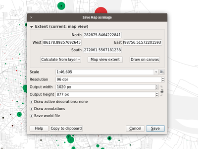
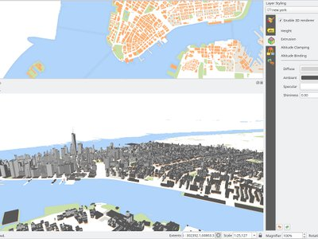
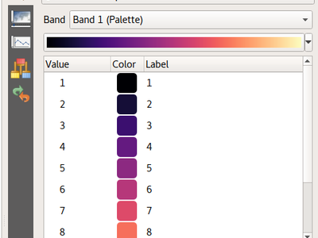
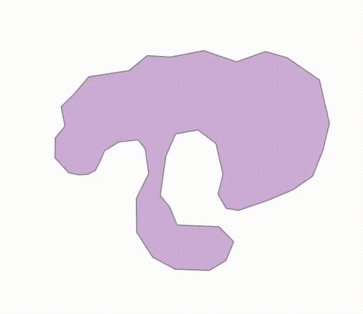
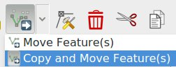
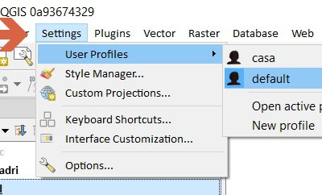
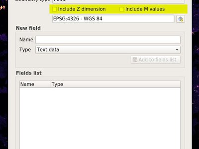

A QGIS 3.0 verzió változásnaplója¶

A valaha volt legjobb QGIS kiadás! A QGIS 3.0 a szeretett nyílt forráskódú GIS program hatalmas felújítása és tisztítása. A QGIS 3.0 hosszú listát tartalmaz az új változásokról, melyek közül kiemelendőkkel itt is megpróbálunk foglalkozni. Mint mindig emlékeztethetünk arra, hogy a QGIS egy nyílt forráskódú projekt, és ha képes arra, hogy támogassa munkánkat adományokkal <http://www.qgis.org/en/site/getinvolved/donations.html?highlight=donate __, `szponzorálással <http://www.qgis.org/en/site/getinvolved/governance/sponsorship/sponsorship.html> `__ vagy hozzájárulással a dokumentációhoz, weboldalhoz, stb..
Köszönet
We would like to thank the developers, documenters, testers and all the many folks out there who volunteer their time and effort (or fund people to do so). From the QGIS community we hope you enjoy this release! If you wish to donate time, money or otherwise get involved in making QGIS more awesome, please wander along to qgis.org and lend a hand!
QGIS is supported by donors and sponsors. A current list of donors who have made financial contributions large and small to the project can be seen on our donors list. If you would like to become and official project sponsor, please visit our sponsorship page for details. Sponsoring QGIS helps us to fund our six monthly developer meetings, maintain project infrastructure and fund bug fixing efforts. A complete list of current sponsors is provided below - our very great thank you to all of our sponsors!
A QGIS szabad szoftver és semmi sem kötelezi arra, hogy fizessen használatáért. Valójában a QGIS használatára bátorítjuk az embereket, legyenek bárhol a világon, pénzügyi és társadalmi helyzettől függetlenül. Hiszünk benne, hogy térbeli döntéstámogatási eszközök biztosítása jobb társadalmakat eredményez az emberiség egészének hasznára.
- QGIS 3.0.0 szponzorai
- Általános
- Funkció: Övezeti statisztika modul eltávolítása
- Funkció: dxf2shp konvertáló modul eltávolítása
- Funkció: Az elárvult oracle raszter modul eltávolítása
- Funkció: TauDEM szolgáltató eltávolítása az alap feldolgozásból
- Funkció: Több súgó és a QGIS súgó fájlok helye konfigurálható
- Funkció: Kép, Webnézet és Fájlnév vezérlők átemelése a Csatolás vezérlőbe
- Funkció: otb és lidartools szolgáltatók eltávolítása a feldolgozásból
- Felhasználói felület
- Funkció: Füles lebegő panelek
- Funkció: Finom felbontású egér görgő nagyítás támogatása
- Funkció: gyors billentyűk párbeszédablakhoz keresés sort tettek
- Funkció: Keresősáv
- Funkció: Több nem-blokkoló, folyamatos szerkesztés
- Funkció: Opció hozzáadása a felhasználói színséma menük megjelenítéséhez
- Funkció: Szín beállítása a térképvászon észak jel dekorációjához
- Funkció: Javított térkép vászon mentése képként
- Funkció: nyitott panelek láthatóságának ki-, bekapcsolása a fő ablakban
- Funkció: Javított felhasználói felület egységesség
- Funkció: Rétegek megnyitása és betöltése egyetlen csoportba
- 3D tulajdonságok
- Kifejezések
- Funkció: Új kifejezés változók
- Funkció: Új globális kifejezés változó @qgis_locale
- Funkció: Új kifejezés változók a térkép beállításokhoz
- Funkció: Új függvények használhatóak a kifejezésekhez
- Feature: A @parent változó megjelenítése az összesítő függvényekben
- Feature: Item_variables expression function inside compositions
- Dokumentáció
- Jelrendszer
- Funkció: Adatvezérelt szimbólum réteg láthatóság
- Funkció: színskála mentése és visszaállítása az egysávos álszínes megjelenítés használatához
- Funkció: Pont és hüvelyk hozzáadása az elérhető szimbólum egységekhez
- Funkció: Új színskála gomb vezérlő
- Funkció: Stílus kezelés átdolgozása és frissítése
- Funkció: Több elem szín és átlátszóság beállításának támogatása a raszter megjelenítéséhez
- Funkció: Alfa csúszka megjelenítése a szín gomb legördülő menüjében
- Funkció: Raszter széthúzás eszköztár műveletek támogatás az álszínes megjelenítéshez
- Funkció: Átlátszóság támogatás a palettás megjelenítéshez
- Funkció: Raszter automatikus széthúzása a térképvászon frissítése során
- Funkció: Felügyelet a felirat tartalom margó felett
- Funkció: A feliratok kitölthetőek a kitöltés szimbólum stílusokkal
- Funkció: Pont csoportosítás (klaszter) megjelenítés
- Funkció: ÚJ TÉRKÉP SZÍNEZŐ ALGORITMUS A QGIS 3.0 KIADÁSBAN
- Funkció: Új „készlet” színek a színskála beállításhoz
- Funkció: Szimbólum réteg átmeneti tiltása
- Funkció: Diszkrét raszter stílus könnyed beállítása
- Címkézés
- Diagramok
- Megjelenítés
- Digitalizálás
- Funkció: Tartomány a töréspont kiválasztáshoz a csomópont eszközben
- Funkció: Alapértelmezett Z érték hozzáadási lehetőség
- Funkció: Az elem mozgatás most már kihasználja a Bővített digitalizálás lehetőségeit
- Feature: Added functionality to copy/move feature to move feature map tool
- Funkció: Útvonalkövetés eltolással
- Funkció: A töréspont eszköz nagyjavítása
- Funkció: Töréspont eszköz: középpont jelölők a töréspontok hozzáadásához
- Funkció: Töréspont eszköz: vonal folytatása
- Funkció: Töréspont eszköz: együttműködés a bővített digitalizálás panellel
- Adatkezelés
- Űrlapok és vezérlők
- Funkció: Címkék kezelése a különböző szerkesztő vezérlőkön
- Funkció: Lehetővé teszi az elem összekapcsolás/szétkapcsolás gombok beállítását a kapcsolat szerkesztő vezérlőn.
- Funkció: a fülek és csoportdobozok feltételes láthatósága
- Funkció: Intelligensebb alapértelmezett szerkesztés vezérlők modulokkal a kiválasztásukhoz
- Funkció: Mező korlátozások kikényszerítése vagy csak figyelmeztetés
- Funkció: Réteg hatáskörű műveletek hozzáadása
- Funkció: Mezőértékek megjelenítése az űrlap szűrés mód automatikus kiegészítőjében
- Funkció: nagyítás az elemekre és elemek felvillantása gyorsbillentyűk hozzáadása a kiválasztás űrlappal párbeszédablakban
- Funkció: közötte/nincs közötte lehetőség hozzáadása a numerikus mezőkhöz a kiválasztás űrlappal párbeszédablakban
- Réteg jelmagyarázat
- Térkép összeállítás
- Funkció: Az összeállítás tábla rács vízszintes és függőleges vonalainak megjelenítés szabályozása
- Funkció: qpt behúzása a QGIS-be egy új összeállítás létrehozásához sablonból
- Funkció: Sorköz testreszabásának lehetősége az összeállítás jelmagyarázat elem címkékhez
- Funkció: Koordináta-rendszer választási lehetőség a térkép elemekhez
- Funkció: A shift billentyű nyomvatartásával korlátozhatóak a vonal szögek egy törtvonal/felület rajzolása közben
- Funkció: Több adat-vezérelhető szabályozás
- Funkció: Térkép összeállítás nagyjavítása
- Elemző eszközök
- Feldolgozás
- Funkció: Új algoritmus a vonalak eltolásához
- Funkció: Új algoritmus az egyoldali övezetekhez
- Funkció: Egyszerűsítési eljárás kiválasztásának hozzáadása az egyszerűsítésekhez
- Funkció: eredmény geometria típus támogatása a modellekben
- Funkció: Szög küszöbérték a simítás algoritmushoz
- Funkció: Jobb támogatás a Z/M dimenziókhoz és az íves geometriákhoz
- Funkció: A feldolgozáshoz adott raszter elemző algoritmusok
- Funkció: Új algoritmus megadott töréspontok kinyerésére
- Feature: Expose zonal statistics from Zonal statistics plugin in toolbox
- Feature: Add a spatialite execute SQL algorithm
- Funkció: Új algoritmus a vonalak meghosszabbításához
- Funkció: Új átvétel kifejezés alapján algoritmus
- Feature: Add import into spatialite algorithm
- Funkció: Interpolálás algoritmusok
- Funkció: Új algoritmus a geometriák kifejezés alapú számításához
- Funkció: Geometriák illesztése a réteghez algoritmus
- Funkció: Új input típus a kifejezésekre
- Funkció: SplitWithLines
- Feature: Pole of inaccessibility algorithm
- Funkció: Az Átvétel attribútum alapján algoritmus képes átvenni null/notnull értékeket
- Funkció: Attribútum index létrehozása algoritmus
- Funkció: Új «geometriák eldobása» algoritmus
- Funkció: Új univerzális «alap statisztika a mezőre» algoritmus
- Funkció: Hőtérkép modul átemelése a feldolgozás algoritmusokba
- Funkció: Új algoritmus a geometriák derékszögesítéséhez
- Funkció: Hálózat elemzés algoritmusok
- Funkció: Feldolgozás modellek exportálása PDF/SVG fájlokba
- Funkció: Új algoritmus a táblák csonkításához
- Feature: Added ‘invalid feature handling’ option
- Feature: Algorithm to fix invalid geometries using native makeValid() implementation
- Feature: Add search to Get Scripts and Models dialog
- Funkció: Általános centrális (súlypont) algoritmus
- Feature: Improved Extract nodes algorithm
- Funkció: Új algoritmus a pontok fordításához (mozgatás)
- Funkció: Javított feldolgozás modellező ablak
- Funkció: Új raszter egyedi értékek jelentés algoritmus
- Feature: Remove TauDEM provider from core Processing
- Funkció: Fájl letöltés a Feldolgozás eszköztárból
- Funkció: Optimalizált pontok a geometria mentén algoritmus
- Funkció: Rendezés kifejezés alapján algoritmus
- Alkalmazás és Projekt beállítások
- Böngésző
- Adatszolgáltatók
- Funkció: Új egységesített «réteg hozzáadása» párbeszédablak
- Funkció: GeoPackage
- Funkció: Összes GDAL írható raszter formátum támogatása a raszter rétegek «Mentés másként» párbeszédablakában
- Funkció: Z/M értékkel rendelkező geometriák támogatása a gpkg, spatialite és ideiglenes réteg szolgáltatókban
- Funkció: Egyedi és nem null érték korlátozások kezelése
- Funkció: GeoNode integráció
- Funkció: Literál alapértelmezett értékek észlelése a spatialite szolgáltatóhoz
- Funkció: Attribútum index létrehozásának támogatása a spatialite szolgáltatóhoz
- Funkció: Támogatás hozzáadása a tömbökhöz
- Funkció: Támogatás a HStore-hoz a PostGIS adat szolgáltatóban
- Funkció: Kapcsolatok automatikus felfedezésének hozzáadása a PostgreSQL-hez
- Funkció: Adat függőségek a rétegek között
- Funkció: dxf exportálás: vetületváltás támogatása
- Funkció: Stílus betöltése/mentése az adatbázisba GPKG és a Spatialite szolgáltatóknál
- Funkció: Alapértelmezések kezelésének javítása
- QGIS Szerver
- Modulok
- Funkció: Megbízható állapot eltávolítása a Modul kezelőből
- Funkció: Offline szerkesztés: Jelzés hozzáadása a csak kiválasztott elemek másolásához
- Funkció: GDAL eszközök átemelve a Feldolgozásba
- Funkció: Lehetővé tett modultelepítés helyi ZIP csomagokból
- Funkció: A modulok egyéni súgókat szolgáltathatnak a kifejezés ablakban
- Programozhatóság
QGIS 3.0.0 szponzorai¶


Ezüst¶
 Ezüst : 3000 EUR
Ezüst : 3000 EUR
AERO ASAHI Corporation |
QGIS felhasználói csoport Dánia |
ARTOGIS a/s |
QGIS felhasználói csoport Németország |
OPENGIS.ch GmbH |
Terraplan |
Office of Public Works, Flood Risk Management and Data Management Section |
WIGeoGIS |


Bronz¶
2D3D.GIS |
Integrate Sustainability Pty Ltd |
Ager Technology |
LandPlan OS GmbH |
Alta ehf |
Lutra Consulting |
Asociación Geoinnova |
MHTC Ltd |
Automatic Knowledge |
MappingGIS |
BGEO Open GIS, SL |
Mapzen |
Cawdor Forestry |
Mierune LLC |
Chartwell Consultants Ltd. |
OSGeo.JP |
City of Canning |
Open Geo Groep |
City of Canning |
Pixalytics |
Datenbankgesellschaft mbH |
QGIS felhasználói csoport Brazilia |
Dr. Kerth + Lampe Geo-Infometric GmbH |
QGIS felhasználói csoport Svédország |
FORNAT AG |
QTibia Engineering |
Forest Design SRL |
Royal Borough of Windsor and Maidenhead |
GAIA mbH |
SOLTIG (Soluciones en Tecnologías de Información Geográfica) |
|
GIS Support Sp. z o.o. |
Septima |
GKG Kassel, (Dr.-Ing. Claas Leiner) |
Solargis s.r.o. |
Gaia3D, Inc. |
Syddjurs Kommune |
Gemeente Gouda |
TerreLogiche |
GeoS Geodätische Software Andreas Hellinge |
Trage Wegen vzw |
Geographica |
Urbsol |
|
Gis3W |
WAGNER-IT |
Infraplan Engineering Services Pvt. Ltd. |
WhereGroup GmbH & Co. KG |
Ingenieurbüro Kauppert |
tkt teleconsult Kommunikationstechnik GmbH |
Insurance Australia Group Limited (IAG) |


Általános¶
Funkció: Övezeti statisztika modul eltávolítása¶
Ez most teljesen megoldható a feldolgozásban, mely ennek a funkciónak a logikus helye.
Funkció: dxf2shp konvertáló modul eltávolítása¶
Ez a funkcionalitás rendelkezésre áll az OGR-ben és nincs többé szükség egy külön QGIS modulra a feladat megoldásához
Funkció: TauDEM szolgáltató eltávolítása az alap feldolgozásból¶
A TauDEM egészen speciális eszközök készlete, mely néhány további eszköz telepítését igényli. Így elhatároztuk, hogy külön szolgáltatóba tesszük, az alap kódbázis méretét és a karbantartási erőfeszítéseket csökkentendő.
Funkció: Több súgó és a QGIS súgó fájlok helye konfigurálható¶
Több Súgó gomb az algoritmusokhoz és a párbeszédablakokhoz és most az online QGIS dokumentációra mutat.
A konfiguráció lehetővé teszi a környezetfüggő súgó elérését az online tároltból, a szervezet hálózatán vagy a helyi számítógépen. A különböző súgó forrásokat kombinálhatjuk.

Ezt a funkciót fejlesztette Alexander Bruy

Funkció: otb és lidartools szolgáltatók eltávolítása a feldolgozásból¶
Az új logika az lesz, hogy modul szolgáltatókat fejlesszünk, mely képes lesz a külső szoftver életciklusát követni.
Felhasználói felület¶
Funkció: Füles lebegő panelek¶
qt > 5.6 verzióknál lehetőség van arra, hogy több lebegő panelt dobjuk ugyanarra a lebegő ablakra, melyben mint fülek jelennek meg https://woboq.com/blog/qdockwidget-changes-in-56.html

Funkció: Finom felbontású egér görgő nagyítás támogatása¶
Néhány egér/mutató eszköznek (különösen mac-en) finomabb felbontása van. Ezek az egér görgő eseményeket sűrűbben, de kisebb értékkel küldik. Ilyen eszközzel használhatatlan a gyors nagyításművelet. Ezt kijavítottuk a 3.0 verzióben
Ezt a funkciót Matthias Kuhn fejlesztette
Funkció: gyors billentyűk párbeszédablakhoz keresés sort tettek¶
Támogatja a művelet név és gyors billentyű szerinti keresést

Ezt a funkciót fejlesztette Alexander Bruy
Funkció: Keresősáv¶
A keresősáv egy gyors, mindig készen álló, általános és bővíthető keresőeszköz a QGIS bal alsó sarkában.
Jelenleg algoritmusokat, műveleteket és rétegneveket lehet keresni, de ki is lehet választani egy elemet az éppen aktív rétegből egy attribútum érték gépelésével.
«Könnyedén» bővíthető, ezért bárki létrehozhat egy QgsLocatorFilter-t a nemzeti geokódoló eszközéhez vagy más online kereséshez vagy adatbázis kereső eszközhöz.

Ezt a funkciót Nyall Dawson fejlesztette
Funkció: Több nem-blokkoló, folyamatos szerkesztés¶
- térkép egység méretezés
- color brewer és korlátozott véletlenszerű színskála szerkesztők
- a színlistában található színek folyamatos szerkesztése a stílus panelben
- az összeálításban található színek és szimbólumok folyamatos szerkesztése
most már mindig jelen van a stílus panelban
Funkció: Szín beállítása a térképvászon észak jel dekorációjához¶
Szín beállitási lehetőség lett hozzáadva az összes térképvászon észak jel dekorációjához.

Ezt a funkciót fejlesztette Mathieu Pellerin
Funkció: Javított térkép vászon mentése képként¶
A térképvászon képként mentése funkciót kiterjesztettük és most a felhasználó röptében módosítsa a méretarányt, a felbontást és a terjedelmet. A terjedelmet a magasság-szélesség arány korlátozhatja. Egy PDF-ként mentés funkciót is hozzáadtunk, hogy gyorsan a felbontás független PDF-be exportáljuk a térképvásznat.

Ezt a funkciót Andreas Neumann támogatta (részleges támogatás)
Ezt a funkciót fejlesztette Mathieu Pellerin
Funkció: nyitott panelek láthatóságának ki-, bekapcsolása a fő ablakban¶
Itt érhető el: - Nézet menü > Panel láthatóság be-/kikapcsolása - Ctrl+Tab gyorsbillentyű

Ezt a funkciót fejlesztette Mathieu Pellerin
Funkció: Javított felhasználói felület egységesség¶
A QGIS támogatási program által támogatott „következetesség hozzáadása a Felhasználói felület vezérlőihez” most már kész van és össze lett vonva és a mester verzióba. E munka részeként az alábbi feladatokat végeztük el:
- Az összes API átlátszóság/átlátszatlanság/alfa a setOpacity() és opacity() szerint szabványosítva lett. Az eljárás kettős értéket vesz föl 0 (átlátszó) és 1 (átlátszatlan) között, megőrizve a következetességet a Qt API-val.
- Egy új QgsOpacityWidget vezérlő lett létrehozva, és most már bárhol használható a felhasználói felületben, ahol az átlátszatlanság beállítható. Ez biztosítja a következetes viselkedést, és az átlátszatlanság ellenőrzése mindenhol megegyezik.
- A Forgatás szabványosítva lett az API-ban és a Felhasználó felületben, tehát most már a forgatás mindig az óramutató járásával megegyező irányban lesz alkalmazva. Minden forgatás vezérlő frissítve lett, így -360 és 360 közötti értékeket fogadnak el.
- A 2.x verziójú projektek megadott és adatvezérelt forgatással rendelkező címkéi átláthatóan frissítve lesznek a 3.0 megnyitásakor.
- A méretarány API-k egységessé lettek téve a QGIS API-n keresztül. Az összezavaró méretarány nevező és a valódi méretarány keveréke el lett távolítva, most már minden a méretarány nevezővel működik. Az összes méretarány tartomány hívás viselkedése szabványosítva lett a min/max általános jelentéséhez (és az erre vonatkozó kifejezett API dokumentációhoz).
- Most már minden méretarány szabályozás egységesen a szabványos méretarány vezérlőt használja a felhasználói felületen keresztül
- A címkézés most már ugyanazt a meghatározást használja a min/max méretarányhoz, mint a felhasználói felület rész, és a meglévő projektek átláthatóan frissítve lesznek a 3.0 verzió megnyitásakor.
- Javítva lettek a legelterjedtebb hibák, amelyek a méretarány használathoz kapcsolódnak, beleértve azokat a hibákat, amelyek megtörték a szabály alapú méretarány korlátozásokat
Köszönet illeti meg a QGIS PSC-t és a projekt adományozókat a munka szponzorálásáért és hogy lehetővé teszik a folytatást!
Ezt a funkciót támogatta: a QGIS Támogatói és Adományozói
Ezt a funkciót fejlesztette: Nyall Dawson
Funkció: Rétegek megnyitása és betöltése egyetlen csoportba¶
Ha sok alréteget akár megnyitni, most már be tudja ezeket tölteni a jelmagyarázat ugyanazon csoportjába.

Ezt a funkciót támogatta Kartoza
Ezt a funkciót fejlesztette Etienne Trimaille
3D tulajdonságok¶
Funkció: 3D térkép megjelenítés és terep generálás¶
Egy teljesen új natív 3D térképnézetünk van a QGIS-ben! A 3D-s térképnézet 2D-s térképet jelenít meg (a projekt rétegeiból) a terepen. Alapértelmezés szerint a terep egy sík sík, de egy digitális domborzatmodellt tartalmazó raszter réteget használhatunk a magassági adatok forrásaként.
Használja a Nézet> Új 3D térképnézet lehetőséget egy 3D nézet hozzáadásához a projekthez. Ez egy új dokkolható 3D térkép vászont hoz létre. A 3D nézetben ugyanazokat a vezérlőket használhatja, mint a 2D-s térképnézetekben, az egér segítségével böngészheti a térképet (ragadja meg a térképet a mozgatáshoz, görgesse az egérgörgőt a nagyításhoz) vagy a billentyűzet nyilakkal. Ezenkívül a 3D nézetekre specifikus kamera vezérlők: a kamerát a következő módok egyikével forgathatja és billentheti:
- középső gomb nyomvatartásával húzza az egeret
- a Shift billentyű és a bal egérgomb nyomvatartásával húzza az egeret
- a Shift nyomvatartása mellett a fel/le/bal/jobb nyíl billentyűk megnyomása

Ezt a funkciót támogatta a QGIS.ORG
Ezt a funkciót fejlesztette: Martin Dobias (Lutra Consulting)
Funkció: 3D megjelenítés a térkép rétegekre¶
Az alapértelmezett konfigurációban a térképrétegek 2D-s térképként jelennek meg a terepen. A 3D-s világ jobb kihasználása azonban lehetséges, ha 3D-s megjelenítőket konfigurálja az egyes térképrétegekhez. 3D-s megjelenítőkkel az adatok 3D-s nézetekként valós 3D objektumokként jeleníthetők meg - ez jelenleg vektoros rétegek esetén támogatott (minden geometria típusra - pont, törtvonal vagy felület). Ez sokkal jobb megjelenítést tesz lehetővé, például:
- az épületek körvonalaival ellátott felületek (adott esetben az adatvezérelt magassággal) kihúzhatóak úgy, hogy azok 3 dimenziósnak tűnjenek
- a fák pont helyzeteivel ellátott pontokat meg lehet jeleníteni a fák 3D-s szimbólumaival is (egyszerű geometriai alakzatokat vagy meglévő 3D-s modelleket lehet betölteni a támogatott fájl formátumból)
A 3D megjelenítés beállításához a rétegstílus rögzített vezérlője vagy a vektor réteg tulajdonságok párbeszédablaka használható - itt egy új fül található a 3D megjelenítés beállításához.

Ezt a funkciót támogatta a QGIS.ORG
Ezt a funkciót fejlesztette: Martin Dobias, Peter Petrik (Lutra Consulting)
Kifejezések¶
Funkció: Új kifejezés változók¶
A @project_crs és a @project_crs_definition változók lettek hozzáadva az aktuális projekt koordináta-rendszerének visszaadásához
Funkció: Új globális kifejezés változó @qgis_locale¶
Visszaadja a QGIS által használt aktuális terület és nyelv beállítását. Alapértelmezésnél ez a rendszer által használt terület és nyelv beállítása. Ha a felhasználó engedélyezi a területi és nyelvi beállítások felülbírálását a QGIS beállításaiban, akkor a felülbírált területi és nyelvi beállítás lesz visszaadva.

Ezt a funkciót fejlesztette Alexander Bruy
Funkció: Új kifejezés változók a térkép beállításokhoz¶
- map_crs, map_crs_definition: retrieves crs details for map
- map_units: retrieves units for map (eg 'meters','degrees')
Ezt a funkciót támogatta: North Road
Ezt a funkciót fejlesztette Nyall Dawson (North Road)
Funkció: Új függvények használhatóak a kifejezésekhez¶
Atlasz kifejezések
- atlas_layerid és atlas_layername: Visszaadja az atlasz aktuális rétegének réteg azonosítóját és rétegnevét.
Összesítő kifejezések
- array_agg(expression, group_by, filter): Egy mezőből vagy kifejezésből összesített értékek tömbjét adja vissza.
Tömb kifejezések
Új csoport, ami tömbök (amiket lista adat szerkezetekként is neveznek) létrehozására és manipulálására szolgáló kifejezésfüggvényeket tartalmaz. A tömbön belüli értékek rendje fontos, ellentétben a «térkép» adatszerkezettel, ahol a kulcs-érték párok sorrendje lényegtelen, és az értékeket a kulcsaik alapján azonosítják.
- array(value1, value2, …) : Egy tömböt ad vissza minden paraméterként átadott értékkel.
- array_append(array, value): Egy tömböt ad vissza, a megadott értéket a végéhez adja.
- array_cat(array1, array2, …): A megadott tömböket összefűzve adja vissza.
- array_contains(array, value): Igaz értéket ad vissza, ha a tömb tartalmazza a megadott értéket.
- array_distinct(array): Egy tömböt ad vissza, mely egy adott tömb különböző értékeit tartalmazza.
- array_find(array, value): Az érték indexét adja vissza egy tömbben (0-t az első elemre). -1-t ad vissza, ha az érték nem található.
- array_first(array): Egy tömb első értékét adja vissza.
- array_get(array, index): Egy tömb n-dik értékét adja vissza (0 az első elem).
- array_insert(array, pos, value): Az adott pozícióban hozzáadott értékkel rendelkező tömböt adja vissza.
- array_intersect(array1, array2): Igaz értéket ad vissza, ha array1 bármelyik eleme megtalálható array2-ben.
- array_last(array): Egy tömb utolsó értékét adja vissza.
- array_length(array): Egy tömb elemeinek számát adja vissza.
- array_prepend(array, value): Visszaad egy tömböt az adott hozzáadott értékkel az elején.
- array_remove_all(array, value): Egy tömböt ad vissza, ahol az adott érték összes előfordulása el lett távolítva.
- array_remove_at(array, pos): Egy tömböt ad vissza a megadott index eltávolításával.
- array_reverse(array): Visszaadja a megadott tömböt fordított sorrendű tömbértékekkel.
- array_slice(array, start_pos, end_pos): A tömb egy részét adja vissza. A szeletet a start_pos és end_pos argumentumok határozzák meg.
- array_to_string(array, delimiter, empty_value): Tömbelemek összefűzése egy karakterláncba elválasztók használatával, és választható karakterlánccal az üres értékekhez.
- regexp_matches(string, regex, empty_value): Egy tömböt ad vissza minden kapcsoló csoport által összekapcsolt karakterlánc közül, ugyanabban a sorrendben, ahogyan szabályos kifejezéssel ellátott karakterláncban megjelent.
- string_to_array(string, delimiter, empty_value): Felbont egy karakterláncot egy tömbbé a megadott elválasztók használatával, és választható karakterláncokkal az üres értékekhez.
Szín kifejezések
- create_ramp(map, discrete): Visszaad egy színátmenet skálát a szín karakterláncaiból és lépéseiből álló térképből
Dátum és idő kifejezések
- epoch(date): A UNIX kezdőidő (1970.01.01. 00:00) és az adott dátum között eltelt időt adja vissza milliszekundumban.
Általános kifejezések
- env(name): Egy környezeti változót vesz fel és a tartalmát karakterláncként adja vissza. Ha a változó nem található, akkor NULL értéket ad vissza.
- raster_statistic(layer, band, property): Statisztikát ad vissza a raszter rétegre. Tulajdonságok: min/max/avg/range/stdev/sum
- with_variable(name, value, node): Ez a függvény egy változót állít be minden kifejezés kód számára, ami 3. argumentumként lesz megadva. Ez csak bonyolult kifejezések esetén hasznos, ahol ugyanazt a kiszámított értéket kell használni különböző helyeken.
Geometria kifejezések
- extend(geometry, start_distance, end_distance): Törtvonalak meghosszabbítása a vonal elején és végén meghatározott mennyiséggel
- hausdorff_distance(geometry a, geometry b, densify_fraction): Visszaadja a Hausdorff távolságot két geometria között. Ez alapvetően egy mérés, hogy két geometria mennyire hasonló vagy különböző, kisebb távolsággal jelezve a hasonló geometriákat.
- inclination(inclination(point_a, point_b): Visszaadja a zenit (0 „csúcspont”) és a nadir (180 „mélypont”) között mért inklinációt (hajlást) a point_a- tól a point_b -ig
- make_circle(center, radius, segment): Kör alakú, szakaszosított felületet hoz létre.
- make_ellipse(center, semi_major_axis, semi_minor_axis, azimuth, segment): Ellipszis alakú, szakaszosított felületet hoz létre..
- make_regular_polygon(center, radius, number_sides, circle): Szabályos sokszög alaprajzú felületet hoz létre.
- make_triangle(): a súgó még hiányzik
- minimal_circle(geometry, segment): A geometria minimális befoglaló körét adja vissza. Ez a minimális kör, mely tartalmazza a halmazban lévő összes geometriát.
- offset_curve(geometry, distance, segments, join, miter_limit): Egy geometriát ad vissza egy törtvonal oldalirányú eltolásával. A távolság egysége a geometria térbeli vetületi rendszere szerint.
- oriented_bbox(geom): Egy geometriát ad vissza, ami az input geometria legkisebb elforgatott befoglaló téglalapja.
- pole_of_inaccessibility(geometry, tolerance): Megközelítőleg kiszámítja a megközelíthetetlenségi pólusát egy felszínhez, ami a legtávolabbi pont a felszín határától. A függvény a «polylabel» algoritmust (Vladimir Agafonkin, 2016) használja, ami egy iteratív (ismételt) megközelítéssel biztosítja a valós megközelíthetetlenségi pólus megtalálását a megadott toleranciaértéken belül.
- simplify(geometry, tolerance): Egyszerűsít egy geometriát a csomópontok eltávolításával, távolság alapú küszöb használatával (azaz Douglas Peucker algoritmus). Az algoritmus megőrzi a geometria nagy eltéréseit és csökkenti a töréspontok számát a majdnem egyenes szakaszokban.
- simplify_vw(geometry, tolerance): Egyszerűsít egy geometriát a csomópontok eltávolításával, területalapú küszöb használatával (azaz Visvalingam-Whyatt algoritmus). Az algoritmus eltávolítja a töréspontokat, ami kis területeket hoz létre a geometriában, pl. kis tüskéket, vagy majdnem egyenes szakaszokat.
- smooth(geometry, iterations, offset, min_length, max_angle): Geometria simítása extra csomópontok hozzáadásával, ami geometria sarkait kerekíti.
- single_sided_buffer(geometry, distance, segments, join, miter_limit): Egy geometriát ad vissza, ami egy törtvonal geometria egyik oldalának övezetnövelésével hozott létre. A távolság egysége a geometria térbeli vetületi rendszere szerint.
Réteg tulajdonságok
- crs_description visszaadja a réteg koordináta-rendszer leírását.
Térkép kifejezések
Ez a csoport «térkép» adat szerkezetek (más néven listák, szótár objektumok, kulcs-érték párok, vagy asszociációs tömbök) létrehozására és manipulálására szolgáló kifejezésfüggvényeket tartalmaz. Egy értéket egy adott kulcshoz lehet hozzárendelni. A kulcs-érték párok rendezése lényegtelen a térkép objektumokban.
- map(key1, value1, key2, value2, , …): Egy térképet ad vissza az összes kulccsal és értékkel, ahogyan a paraméterpárok meg lettek adva.
- map_akeys(map): Egy térkép összes kulcsát egy tömbként adja vissza.
- map_avals(map): Egy térkép összes értékét egy tömbként adja vissza.
- map_concat(map1, map2, …): Egy térképet ad vissza a megadott térkép összes elemével. Ha két térkép ugyanazt a kulcsot tartalmazza, akkor a második térkép kulcsértékét kapja.
- map_delete(map, key): Egy térképet ad vissza az adott kulcsok és megfelelő értékei nélkül.
- map_exist(map, key): Igazat ad vissza, ha az adott kulcs már létezik egy térképben.
- map_get(map, key): Egy térkép adott kulcsához tartozó értéket adja vissza.
- map_insert(map, key, value): Egy térképet ad vissza egy hozzáfűzött kulccsal/értékkel.
Térkép rétegek
Új csoport, ami tartalmazza az aktuális projektben rendelkezésre álló térkép rétegek listáját. Visszaadja a belső térkép réteg azonosítókat. Ezt számos más kifejezés függvényben használható, amelyek a térkép rétegekre hivatkoznak.
Matematikai kifejezések
- inclination(point_a, point_b): Visszaadja a zenit (0 „csúcspont”) és a nadir (180 „mélypont”) között mért inklinációt (hajlást) a point_a- tól a point_b -ig
Műveletek
- ~: Egy szabályos kifejezés egyeztető keresést hajt végre egy karakterláncon.
Rekord és attribútum kifejezések
át lett nevezve a csak „Rekord” megnevezésről
- get_feature_by_id(layer, feature_id): Az elemet egy rétegen megadott azonosítóval adja vissza.
- is_selected(feature, layer): Visszatér, ha egy elem ki van választva. Paraméter nélkül az aktuális elem kerül lekérdezésre.
- num_selected(layer): A kiválasztott elemek számát adja vissza egy megadott rétegen. Alapértelmezésben arra a rétegre vonatkozik, amelyen a kifejezés ki lesz értékelve.
- represent_value(value, fieldName): Returns the configured representafftion value for a field value. It depends on the configured widget type. Often, this is useful for «Value Map» widgets.
- uuid(): Univerzális egyedi azonosító (UUID) generálása minden sorhoz a Qt QUuid::createUuid módszer használatával. Minden UUID 38 karakter hosszú.
**Kapcsolatok*
Új csoport, ami listázza az összes elérhető tábla kapcsolatot egy projektben. Hasznos a relation_aggregate függvényekhez.
Elavult
- $scale: régi változó az aktuális térkép méretarány beszerzéséhez. A maps_scale változóval lecserélve
Módosítások
- Változások a substr() függvényben
- negatív kezdő értékek támogatása (pl. a substr(«hello»,-2) a «lo» eredményt adja vissza)
- negatív hosszúság értékek támogatása (pl. a substr(«hello»,3,-1) az «ll» eredményt adja vissza)
- a hosszúság paraméter most már választható, az alapértelmezett a karakterlánc vége (pl. a substr(«hello world»,7) a «world» eredményt adja vissza)
- strpos() most már egyszerű karakterláncra támaszkodik egy karakterláncban végzett keresésen belül
- regexp_match() most már visszaadja a megfelelő szabályos kifejezés pozícióját
Ezt a funkciót számos fejlesztő fejlesztette ki
Feature: A @parent változó megjelenítése az összesítő függvényekben¶
Ez lehetővé teszi az attribútumok és geometriák elérését a szülő elemből, ha az az „aggregate” kifejezés függvény szűrőjében van. Ezzel lehet helyben kiszámítani az összesítéseket elemenként.
E.g. max "measurement" for each point_station per polygon_research_area.
Vagy egy alapértelmezett attribútum érték az elem digitalizálásakor:
aggregate(layer:='countries', aggregate:='max', expression:=\"code\", filter:=intersects( $geometry, geometry(@parent) ) )

Ezt a funkciót fejlesztette: Matthias Kuhn (OPENGIS.ch)
Feature: Item_variables expression function inside compositions¶
Ez egy új item_variables kifejezés függvényt ad hozzá, amikor kifejezések vannak használva egy lapösszeállítás környezetben.
A függvény egyetlen argumentumot, egy lapösszeállításban lévő elem azonosítóját veszi fel, és egy változónév-térképet ad vissza az adott elemhez tartozó értékre. Ez lehetővé teszi olyan dolgok végrehajtását, mint a szöveg beillesztése egy címkére, ami a lapösszeállítás egy másik elemének tulajdonságait tartalmazza, például
Térkép méretarányának beszúrása egy címkébe:
map_get( item_variables( 'map'),'map_scale')
Térkép középponti x koordinátájának beszúrása egy címkébe:
x(map_get( item_variables( 'map'),'map_extent_center'))
Ezt a funkciót támogatta: North Road
Ezt a funkciót fejlesztette Nyall Dawson (North Road)
Dokumentáció¶
Funkció: Feldolgozás algoritmus fejlesztések¶
A feldolgozás algoritmusok felül lettek vizsgálva és dokumentálva lettek. A Súgó gombra kattintva megnyílik a QGIS honlapja, és megjeleníti az algoritmus leírását továbbfejlesztett dokumentációval és képekkel.

Ezt a funkciót támogatta: A QGIS támogatási felajánlások
Ezt a funkciót fejlesztette: Matteo Ghetta (Faunalia), Alexander Bruy
Jelrendszer¶
Funkció: Adatvezérelt szimbólum réteg láthatóság¶
Adatvezérelt felülírás hozzáadása a szimbólum réteg láthatóságának szabályozásához. Lehetővé teszi a felhasználók számára, hogy letiltsanak bizonyos szimbólum rétegek megjelenítését a megfelelő elemekhez.
Ezt a funkciót támogatta: North Road
Ezt a funkciót fejlesztette Nyall Dawson (North Road)
Funkció: színskála mentése és visszaállítása az egysávos álszínes megjelenítés használatához¶
Ezt a funkciót fejlesztette Alexander Bruy
Funkció: Pont és hüvelyk hozzáadása az elérhető szimbólum egységekhez¶
Ezt a funkciót támogatta: North Road
Ezt a funkciót fejlesztette Nyall Dawson (North Road)
Funkció: Új színskála gomb vezérlő¶
A QGIS 3.0 verzióban a színskálák kezelés sokkal jobb lett az újonnan bevezett színskála gomb vezérlővel. A fejlesztések a következőket tartalmazzák: az egyéni színskála beállítások megjegyzésre kerülnek a projektet újbóli megnyitása során - a színskála invertálás be lett építve a vezérlőbe, ez a művelet a QGIS-en keresztül engedélyezhető - gyors elérés biztosítása a „kedvenc” színskálákhoz a vezérlő felugró menüjében - a katalógusokhoz (cpt-city és ColorBrewer) történő kapcsolódás sokkal kellemesebb.

Ezt a funkciót fejlesztette Mathieu Pellerin
Funkció: Stílus kezelés átdolgozása és frissítése¶
A stíluskezelés jelentős frissítést kapott. A fejlesztések a következők:
- Új kedvenc csoportosítási rendszer került hozzáadásra, ami alapértelmezettként a szimbólum lista vezérlőt használja
- A szimbólumok lista vezérlőből kiválasztott címke / intelligens csoport a rétegek (és az egyes munkamenetek) közti átváltásakor továbbra is megmarad
- A szimbólumok lista vezérlő frissíteni fogja a címkét / intelligens csoport legördülő listát, amikor a felhasználó kategóriát ad hozzá / átnevez / eltávolít
- A felhasználók mostantól közvetlenül címkézhetnek, valamint hozzáadhatnak a kedvencekhez, a szimbólumokhoz, miközben mentik ezeket a stílus adatbázisba
- A stíluskezelés korszerűsítése érdekében a csoportok el lettek távolítva és a címkékkel lettek teljesen helyettesítve
- A címkék integrálva lettek az importálás/exportálás felhasználói felületbe

Ezt a funkciót fejlesztette Mathieu Pellerin
Funkció: Több elem szín és átlátszóság beállításának támogatása a raszter megjelenítéséhez¶
Most már lehetőség van arra, hogy az egysávos álszínes és a palettás megjelenítésnél több szín és átlátszósági beállítást módosítson egyszerre. Egyszerűen ki kell jelölni az érték listán belül az értékeket és jobb kattintásra válik elérhetővé ez a felugró menü.

Ezt a funkciót fejlesztette Mathieu Pellerin
Funkció: Alfa csúszka megjelenítése a szín gomb legördülő menüjében¶
Lehetővé teszi az alfa szín összetevő gyors finomhangolását

Ezt a funkciót támogatta: North Road
Ezt a funkciót fejlesztette Nyall Dawson (North Road)
Funkció: Raszter széthúzás eszköztár műveletek támogatás az álszínes megjelenítéshez¶
Ezt a funkciót fejlesztette: Mathieu Pellerin
Funkció: Átlátszóság támogatás a palettás megjelenítéshez¶
A QGIS 3.0 kiadásban most már lehetséges az egyedi értékek átlátszóság értékeinek módosítása a palettás megjelenítésnél.

Ezt a funkciót fejlesztette Mathieu Pellerin
Funkció: Raszter automatikus széthúzása a térképvászon frissítése során¶
tekintse meg a https://lists.osgeo.org/pipermail/qgis-developer/2016-September/044393.html és kövesse nyomon az álszínes raszter frissített terjedelmét az automatikus osztályozással.
Ezt a funkciót fejlesztette: Even Rouault
Funkció: Felügyelet a felirat tartalom margó felett¶
Lehetővé teszi a bal/felső/jobb/alsó margók beállítását a felirat tartalmához.
Ezt a funkciót támogatta: North Road
Ezt a funkciót fejlesztette Nyall Dawson (North Road)
Funkció: A feliratok kitölthetőek a kitöltés szimbólum stílusokkal¶
Ez megváltoztatja a felirat keretek megjelenítését a QGIS jelrendszer motor használatára, ami azt jelenti, hogy az összes meglévő kitöltési stílus használható a felirat keretek formázására.
Valamint használhatóak a rajzi hatások és az adatvezérelt szimbólum paraméterek is.
Ezt a funkciót támogatta: North Road
Ezt a funkciót fejlesztette Nyall Dawson (North Road)
Funkció: Pont csoportosítás (klaszter) megjelenítés¶
Új szimbólum megjelenítés, ami csoportosítja a közeli pontokat egyetlen megjelenített jel szimbólumba. Választható, hogy a címkén megjelenjen azon elemek száma, melyek összesítve lettek egyetlen szimbólumba.
Továbbá, néhány fejlesztés történt a pont áthelyezés megjelenítéshez: különösképpen:
- a pontok mostantól a „legközelebb” csoporthoz vannak rendelve, nem pedig csak az első csoporthoz a keresési távolságon belül. Bizonyos esetekben ez egy távolabbi csoporthoz rendeli az elemeket, ami kevésbé kiszámítható csoport mintázatot eredményez
- az egyedülálló pontok most már helyesen jelennek meg a saját kiválasztási állapotukban
- sok kód takarítás + dokumentáció is.
Fejlesztők számára: A QgsPointDisplacementRenderer egy új tiszta virtuális QgsPointDistanceRenderer alaposztályra lett osztva, ami kezeli a klaszterek felismerését és a pontok csoportosítását. Az új klaszter megjelenítő újrahasznosítja ezt az alaposztályt, hogy elkerülje a kód ismétlését.
Tekintse meg a közösségi finanszírozási programot a weboldalon a további részletekért.

Ezt a funkciót Andreas Neumann, Qtibia Engineering (Tudor Barascu), Karl-Magnus Jönsson, Geonesia (Nicolas Ponzo) és számos további névtelen támogató finanszírozta, akiknek nagylelkű hozzájárulásait is nagyra értékeljük!
Ezt a funkciót fejlesztette: Nyall Dawson
Funkció: ÚJ TÉRKÉP SZÍNEZŐ ALGORITMUS A QGIS 3.0 KIADÁSBAN¶
lásd: http://nyalldawson.net/2017/02/new-map-coloring-algorithms-in-qgis-3-0/

Ezt a funkciót Nyall Dawson fejlesztette
Funkció: Új „készlet” színek a színskála beállításhoz¶
Lehetővé teszi olyan színátmenet alkalmazását, amely a kiválasztott színek listáját tartalmazza. Jelenleg a QGIS-ben nincs mód arra, hogy egy megjelenítés a korábban kiválasztott szín listával osztályozzon. Tehát a színeket manuálisan lehet módosítani az osztályozás után, de ez fárasztó, ha rendszeresen ugyanazt a színsémát használja. Alapvetően olyan, mint a color-brewer színskála beállítás, de lehetővé teszi a felhasználók számára, hogy a saját színkészletüket vegyék fel a használathoz (mert Cynthia Brewer nem az egyetlen térképészeti szín szakértő!)

Ezt a funkciót támogatta: North Road
Ezt a funkciót fejlesztette Nyall Dawson (North Road)
Funkció: Szimbólum réteg átmeneti tiltása¶
Új jelölőnégyzetet ad az egyes szimbólum rétegek tulajdonságainak aljára, ami lehetővé teszi, hogy ellenőrizhesse, hogy a réteg engedélyezett-e vagy sem. A letiltott rétegek nem lesznek megjelenítve, de mentésre kerülnek, és később engedélyezhetők. Ez megkönnyíti a szimbólum megjelenés finomhangolását anélkül, hogy a szimbólum réteget teljes egészében el kellene távolítani.

Ezt a funkciót támogatta: North Road
Ezt a funkciót fejlesztette Nyall Dawson (North Road)
Funkció: Diszkrét raszter stílus könnyed beállítása¶
A QGIS 3.0 kiadásban a meglévő raszter Palettás megjelenítőt úgy alakították ki, hogy megkönnyítsék a diszkrét raszter rétegek formázását, mint például a földfelszín vagy a logikai raszter. Mostantól a felhasználók kiválaszthatják az átnevezett „Palettás/Egyedi értékek” megjelenítést, ahol az „Egyedi értékek hozzáadása” gombra kattintva betölthetik az összes egyedi raszterértéket a rétegből. Ezek automatikusan hozzá lesznek rendelve egy színhez a kiválasztott színskála alapján.
Az egyedi érték számítása a háttérben történik, hogy a felhasználó felület válaszképes legyen a nagy (vagy távoli) raszteres rétegek számítása közben. Emellett a felhasználók manuálisan is hozzáadhatnak egyedi új osztályokat, és módosíthatják a hozzájuk tartozó pixel értéket bármely létező osztály esetén. Egyszerre több osztály törlése is támogatott, valamint a szín, az átlátszóság és a címkék beállítása több osztályon is módosítható egyidőben.
A színskálák betölthetőek ESRI clr/GDAL/GRASS támogatott színtábla formátumú szöveg fájlból. Megosztás céljából a színskálákat el lehet menteni clr szöveg fájlba.

Ezt a funkciót támogatta: Stéphane Henriod, Satelligence (http://satelligence.com/), Bird’s Eye View (https://www.birdseyeviewgis.com/), és más névtelen adományozó
Ezt a funkciót fejlesztette: Nyall Dawson (North Road)
Címkézés¶
Funkció: Címke betűkészletének méret beállítása mm/pixel egységekben¶
Ezt a funkciót támogatta: North Road
Ezt a funkciót fejlesztette Nyall Dawson (North Road)
Funkció: Az egyéni címkézési eszköztár mostantól mindig engedélyezve van¶
Hála az új segéd adattárolónak és a szerkeszthető kapcsolt táblának, a manuális címke testreszabás most már mindig engedélyezve lesz. Az eszköztár aktiválásához nem kell többé összerendelő mezőt létrehozni az adatbázisban a címke pozíció, forgatás vagy más lehetséges beállítás esetén. Nincs többé másolat az írásvédett adatforrásról és sokkal gyorsabb lesz a címkézés! Figyelem, a címkék csak a projekt fájlba lesznek elmentve .qgd sqlite adatbázisban, vagy a .qgz tömörített projekt fájlon belül, ha ezt a formátumot választja. Ne felejtse el megosztani a .qgd fájlt is, ha a projekt fájlt megosztja valakivel.
A profi felhasználók számára, a régi út, vagyis az adatforrásból beállított adatvezérelt mezők használata továbbra is megmaradt. Csak előtte meg kell határozni ezeket a réteg tulajdonságaiban!
Ezt a funkciót támogatta: Ökológia és Fenntartható Fejlődés Francia Minisztériuma
Ezt a funkciót fejlesztette: OSLANDIA - Paul Blottiere
Diagramok¶
Funkció: Adatvezérelt tulajdonságok¶
Több adatvezérelt tulajdonság beállítás támogatás a diagramokhoz:
- Távolság
- Prioritás
- Z Index
- Akadály
- Megjelenítés
- Mindig látszik
- Diagram kezdő szög
Ezt a funkciót a QGIS Támogatási Program támogatta
Ezt a funkciót fejlesztette Nyall Dawson (North Road)
Megjelenítés¶
Funkció: Élő réteg támogatás¶
A QGIS 3.0 mostantól támogatja az élő rétegeket. Ezek a rétegek újra meg lesznek jelenítve (kirajzolva) előre meghatározott időközönként tisztán és villódzásmentesen. Az élő rétegek kiválóan alkalmasak a folyamatosan változó adatok követéséhez, például gépjármű flották, madárcsapatok vonulása, amihez telemetriai adatai vannak és így tovább.

Ezt a funkciót fejlesztette: Kartoza & North Road
Funkció: Réteg frissítés vagy réteg művelet indítása/leállítása PostgreSQL üzenet jel hatására¶
Az élő rétegek hatására ez lehetővé teszi műveletek végrehajtását vagy a réteg frissítését a QGIS-ben, de csak akkor, ha az adatbázis értesíti a QGIS-t, hogy valamit meg kell tennie. Kevesebb erőforrást igényel, mint az időközönkénti frissítés, és ezzel még kódolni is tud egy csevegő alkalmazást a QGIS-ben :)
Tekintse meg ezt a weboldalt: https://vimeo.com/236604742
http://oslandia.com/en/2017/10/07/refresh-your-maps-from-postgresql/
Ezt a funkciót támogatta: QGIS.org Támogatási alkalmazás
Ezt a funkciót fejlesztette: OSLANDIA - Vincent Mora
Funkció: Címkézési eredmények gyorsítótárazása a szükségtelen újrarajzolások elkerülésének érdekében, amikor a vászon frissül.¶
Ez a változás lehetővé teszi a címkézési eredmények gyorsítótárazását egy térkép megjelenítést követő képben. Ha a gyorsítótárazott címkézési eredmény képe újra felhasználható a következő megjelenítéshez, akkor fel lesz használva, elkerülve a címkézési problémában részt vevő összes réteg újrarajzolását és a megoldja címkézési módokat. Alapvetően ez azt jelenti, hogy a vászon frissítésekor a NEM-CÍMKÉZETT rétegek módosításai sokkal gyorsabban jelennek meg. (Olyan rétegek módosításai, amelyek részt vesznek valamilyen címkézési megoldásban továbbra is igénylik a teljes újrarajzolást)
Ezt a funkciót fejlesztette Nyall Dawson (North Road)
Funkció: Rács megjelenítés a pont áthelyezéshez¶
Rács megjelenítés használata a pont áthelyezéshez

Ezt a funkciót fejlesztette: Muhammad Yarjuna Rohmat (Kartoza)
Digitalizálás¶
Funkció: Tartomány a töréspont kiválasztáshoz a csomópont eszközben¶
Ez a funkció lehetővé teszi a csomópont tartomány kiválasztását egy pontból.
A funkció a ** Shift + R ** billentyű kombinációval aktiválható - utána az elem kezdő és záró pontjára kell kattintani - ez kijelöli a kettő közötti összes töréspontot.
A tartomány kijelölés bármikor törölhető jobb kattintással vagy az Esc billentyű megnyomásával.
Zárt görbék (felületek) esetén „hosszabb” módra lehet váltani a gyűrű körül, ha lenyomva tartja a Ctrl billentyűt amíg a végső pontra kattint.

Ezt a funkciót támogatta: Az ökológiáért felelős francia minisztérium
Ezt a funkciót fejlesztette: Martin Dobias (Lutra Consulting)
Funkció: Alapértelmezett Z érték hozzáadási lehetőség¶
Geopackages/Shape fájl létrehozása: Most már beállítható, hogy Z értéket tartalmazzon

Ezt a funkciót fejlesztette: Alexander Lisovenko / Paul Blottiere
Funkció: Az elem mozgatás most már kihasználja a Bővített digitalizálás lehetőségeit¶
Egyszerűen mozgasson egy elemet az új „kattintás - kattintás ergonómiával”, és használja az Bővített digitalizálás panelt és a gyorsbillentyűt a szögek, távolságok, pontos XY korlátozásához.
Ezt a funkciót fejlesztette: Denis Rouzaud
Feature: Added functionality to copy/move feature to move feature map tool¶
Ez lehetővé teszi a kijelölt elem másolatának létrehozását és annak mozgatását

Ezt a funkciót fejlesztette: Denis Rouzaud
Funkció: Útvonalkövetés eltolással¶
Most már használhatja a követés digitalizálás eszközt eltolással, ahogyan a mellékelt képen látható.

Ezt a funkciót támogatta: d.b.g. Datenbankgesellschaft mbH
Ezt a funkciót fejlesztette: Martin Dobias
Funkció: A töréspont eszköz nagyjavítása¶
A Csomópont eszköz (mostantól Töréspont eszközre átnevezve) egy teljes átdolgozáson esett túl a nagyobb rugalmasság érdekében. Néhány példa a legfontosabb változásokból:
- Ahelyett, hogy a felhasználónak először ki kellene választania egy elemet, majd a második lépésben a töréspontokat szerkesztenie, az eszköz egyszerre több elemmel is képes dolgozni. Ennélfogva egyszerűen több elemből kiválaszthatja a töréspontokat, és egyszerre áthelyezheti vagy törölheti azokat. Ha szükség van arra, hogy korlátozza a meghatározott elemek töréspontjainak kiválasztását, akkor először kiválaszthatóak az elemek a kiválasztó eszközzel - ilyen esetekben a töréspont eszköz csak a kiválasztott elemek töréspontjaival dolgozik.
- Ahelyett, hogy csak az aktuálisan kiválasztott réteggel dolgozna, az eszköz képes dolgozni minden olyan réteggel, amely egyidőben szerkesztő módban vannak. Az olyan elemek mozgatása, amelyek logikailag egymáshoz tartoznak, de különböző rétegekben találhatóak, sokkal könnyebbé váltak. Az aktuális réteget azonban figyelembe veszi, ha a töréspontok kiválasztásakor több lehetőség van.
- A elemek és azok csúcsai ki lesznek emelve, amikor a felhasználó rájuk mozgatja az egérmutatót, így adva jobb vizuális visszajelzést.
- A QGIS 2.x verzióban a töréspontokat egy töréspontra kattintva lehetett mozgatni, húzva a folyamatosan nyomva tartott bal egérgombbal és végül az egérgomb felengedésével. Ez a viselkedés „kattintás-kattintás”-ra változott, ahol a felhasználó először rákattint a töréspontra, hogy kiválassza, majd húzza azt anélkül, hogy megnyomná az egérgombokat, és újra kattint az elengedéshez, ha a elért a végső célterülethez. Ennek a változtatásnak az érvei a következők voltak:
- könnyebb pontosan elhelyezni csomópontokat (nem kell többé erőltetni az egérgombot)
- az egyik nem mozgatja véletlenül a csomópontokat
- lehetőség van a művelet megszakítására
- lehetővé teszi a térkép eltolását a szóköz billentyű megnyomásával, mialatt a csomópontot mozgatja
Tekintse meg a https://github.com/qgis/QGIS-Enhancement-Proposals/issues/69 honlapot a bővebb információkért.

Ezt a funkciót támogatta: QWAT
Ezt a funkciót fejlesztette: Martin Dobias (Lutra Consulting)
Funkció: Töréspont eszköz: középpont jelölők a töréspontok hozzáadásához¶
A továbbfejlesztett töréspont eszköz mostantól további jelölőket jelenít meg a vonal szakaszok középpontjában. Ilyen jelölőkre kattintva új töréspontot adhat meg. Meg lett tartva a töréspontok hozzáadásának meglévő módja, vagyis a szakaszon történő dupla kattintás.

Ezt a funkciót támogatta: QWAT
Ezt a funkciót fejlesztette: Martin Dobias (Lutra Consulting)
Funkció: Töréspont eszköz: vonal folytatása¶
Amikor törtvonal geometriákat szerkeszt a töréspont eszközzel, és az első vagy az utolsó töréspont felé mozgatja az egeret, akkor egy extra pontot jelenít meg a végpont mellett. Ha rákattint a jelölőre, akkor új töréspontot ad hozzá a geometria végéhez.

Ezt a funkciót támogatta: QWAT
Ezt a funkciót fejlesztette: Martin Dobias (Lutra Consulting)
Funkció: Töréspont eszköz: együttműködés a bővített digitalizálás panellel¶
A bővített digitalizálás panel mostantól működik a töréspont eszközzel - most már meg lehet adni a panelben egy új vagy már létező töréspont koordinátáját, mint ahogyan más digitalizáló térképi eszközben.

Ezt a funkciót támogatta: QWAT
Ezt a funkciót fejlesztette: Martin Dobias (Lutra Consulting)
Adatkezelés¶
Funkció: Mozgatás az aktuális elemre az attribútum táblában¶

Ezt a funkciót Marco Hugentobler fejlesztette

Feature: Auxiliary Storage Support¶
Egy új fül érhető el a vektor réteg tulajdonságokban a segédtároló kezeléséhez:
Egy új művelet az Adatok tárolása a projektben az adatvezérelt menüben érhető el, amivel egyszerűen kezelheti egy adott tulajdonság segéd adatait:
A segédadatok egy sqlite adatbázisban vannak tárolva, és az OGR adatszolgáltató (a SpatiaLite szolgáltató helyett) kezeli, hogy a lehető legkisebb legyen az adatbázis fájl. Ez az adatbázis fájl (.qgd kiterjesztéssel) a projektfájl mellett található, vagy közvetlenül az új .qgz formátumban van beágyazva.
Tekintse meg az eredeti beolvasztási kérést és a cikket ami bővebben kifejti

Ezt a funkciót fejlesztette: Paul Blottiere / Oslandia
Funkció: Metaadatok nagyjavítása¶
A QGIS metaadatok rendszere teljesen át lett dolgozva. A QGIS 3.0-ban bemutatkozik a mi saját belső, megformált metaadatok sémánk, ami elkülönül a QGIS projekt fájl formátumától. Új API képességek mutatkoznak be a réteg metaadatainak olvasásához és írásához. Külön lett választotva a metatadatok megjelenítése a szerkesztéstől, és új metaadat szerkesztő eszköz lett hozzáadva. A metaadatok jelenleg a projekt fájlban kerülnek mentésre. Menthető XML fájlként is a fájl alapú rétegek mellett vagy egy helyi sqlite adatbázisban távoli rétegekhez (például PostGIS).
you can read more about the design considerations adopted in this work by referring to the QGIS Enhancement Proposal (QEP) - QEP-92
Kérjük, vegye figyelembe, hogy ez az első fázisa a QGIS teljes és szabványos metaadat infrastruktúrájának kidolgozásában. További támogatásokat keresünk a metaadat rendszer teljesebb átdolgozásának megvalósításához - tekintse meg ezt a dokumentumot a támogatásra szoruló jövőbeli tervezett munkacsomagok részleteihez.
A QGIS metaadat séma részletes leírását itt találhatja meg.
A munka elsődleges támogatója a Világbank/GFDRR volt a NINA által szolgáltatott támogató finanszírozással.

Ezt a funkciót támogatta: Világbank/GFDRR
Ezt a funkciót fejlesztette: Kartoza és az együttműködők
Funkció: Egységesített adatforrás kezelő párbeszédablak¶
Egyetlen egységes párbeszédablak az adatforrás kezelés és a rétegbetöltés kezeléséhez.

Ezt a funkciót támogatta: Boundless
Ezt a funkciót fejlesztette: Alessandro Pasotti
Funkció: OSM Letöltés eszköz eltávolítva¶
We have removed the OSM downloader tool that was provided in 2.x releases of QGIS. We encourage you to rather use the QuickOSM plugin which has been ported to QGIS 3.0.
Űrlapok és vezérlők¶
Funkció: Címkék kezelése a különböző szerkesztő vezérlőkön¶
A Húzd és ejtsd egy elem dupla kattintása lehetővé teszi, hogy szabályozza, hogy a címke minden egyes elemhez külön-külön jelenjen meg.
Ezt a funkciót Matthias Kuhn fejlesztette
Funkció: Lehetővé teszi az elem összekapcsolás/szétkapcsolás gombok beállítását a kapcsolat szerkesztő vezérlőn.¶
Ezt a funkciót Matthias Kuhn fejlesztette
Funkció: a fülek és csoportdobozok feltételes láthatósága¶
Ez új beállítási lehetőséget ad a fülek és csoportdobozok feltételes megjelenítéséhez vagy elrejtéséhez a Húzd és ejtsd tervezési űrlapokon. A beállítás a mezők konfigurációs felületén dupla kattintással történik a tervező fában. A láthatóság ellenőrzésére kifejezést lehet megadni. A kifejezés minden alkalommal újra ki lesz értékelve az űrlap érték változása során, és a fül vagy a csoportdoboz ennek megfelelően lesz megjelenítve/elrejtve.
Ezt a funkciót Matthias Kuhn fejlesztette
Funkció: Intelligensebb alapértelmezett szerkesztés vezérlők modulokkal a kiválasztásukhoz¶
Mostantól a vezérlők adhatnak pontszámot arról, hogy milyen jól tudnak kezelni egy mezőtípust. Ez jobb alapértelmezett vezérlőkhöz vezet.
Ezenkívül modulok is hozzáadhatók egy vezérlő típus kiválasztásához a külső információk függvényében. Egyikük egy táblát használ a PostgreSQL-ben, ami lehetővé teszi az egyes mezőkhöz használni kívánt vezérlő típus és konfiguráció megadását
Automatikusan felveszi RelationReference vezérlőt az idegen kulcsokért.
Ezt a funkciót fejlesztette: Patrick Valsecchi
Funkció: Mező korlátozások kikényszerítése vagy csak figyelmeztetés¶
A nem kikényszerített korlátozások csak egy figyelmeztetést jelenítenek meg a felhasználónak, de nem akadályozzák meg az elem véglegesítését. A kikényszerített korlátozások blokkolják a felhasználót a nem megfelelő elemek véglegesítésében. Tehát most már finom figyelmeztetések vannak! A szolgáltató által észlelt korlátozások mindig kényszerítettek.

Ezt a funkciót támogatta: OpenGIS.ch
Ezt a funkciót fejlesztette Nyall Dawson (North Road)
Funkció: Réteg hatáskörű műveletek hozzáadása¶
Az attribútum táblán belül van egy új gomb, amivel kiválaszthatja azokat az műveleteket, amelyek nem az különböző elemeken alapulnak, hanem az egész rétegre érvényesek. Általában az összes elemen vagy csak a kiválasztottakon lesznek végre hajtva a műveletek.
Ezt a funkciót Matthias Kuhn fejlesztette
Funkció: Mezőértékek megjelenítése az űrlap szűrés mód automatikus kiegészítőjében¶
Az automatikus kiegészítés szépen frissült a háttérben, így a felhasználói felület szép és érzékeny marad, még akkor is, ha a kapcsolódó táblázatban több millió rekord van.
Mostantól szöveges mezők keresési vezérlőjeként használható, így a böngésző ablakban látható, ha a szűrőt szöveges mezőhöz állítja, vagy ha az űrlapalapú kiválasztást/szűrőt egy réteg kiválasztásával és az F3 megnyomásával indítja el.
Ezt a funkciót támogatta: North Road
Ezt a funkciót fejlesztette Nyall Dawson (North Road)
Funkció: nagyítás az elemekre és elemek felvillantása gyorsbillentyűk hozzáadása a kiválasztás űrlappal párbeszédablakban¶
Lehetővé teszi a nagyon gyors navigációt és az elemek azonosítását, amelyek megfelelnek az űrlapban szereplő kritériumoknak
Ezt a funkciót támogatta: North Road
Ezt a funkciót fejlesztette Nyall Dawson (North Road)

{kind=link}
Réteg jelmagyarázat¶
Funkció: Nem kiválasztott rétegek elrejtése művelet¶
Lehetővé teszi az összes ki nem választott réteg gyors elrejtését. Ez nagyon hasznos, ha van egy nagy projektje, és néhány réteget kivéve mindent gyorsan el akar rejteni

Ezt a funkciót támogatta: SMEC (Surbana Jurong)
Ezt a funkciót fejlesztette Nyall Dawson (North Road)
Funkció: A csoportokon belüli rétegek láthatóságának ergonómiai változása¶
- Egy csoport engedélyezése/letiltása nem változtatja meg a csoport gyermekelemeinek engedélyezési állapotát. Egy jelmagyarázat bejegyzés csak is akkor látható, ha engedélyezve van az összes szülő elemmel együtt.
- Nincs többé félig engedélyezett csoport állapot
- Ctrl-katintás egy letiltott csoporton, engedélyezni fogja a csoportot az összes hozzá tartozó elemmel együtt.
- Kattintás egy letiltott rétegre, engedélyezni fogja a réteget az összes szülő elemmel együtt.
- Ctrl-katintás egy engedélyezett csoporton, letiltja a csoportot az összes hozzá tartozó elemmel együtt.
- Ctrl-kattintás egy engedélyezett rétegre, letiltja a réteget az összes szülő elemmel együtt.
- Ezek a műveletek elérhetőek a fa nézet környezeti menüjének elemei között.
- A nem látható rétegek, mert azok vagy a szülő elemei le vannak tiltva, szürkén jelennek meg.
Ezt a funkciót fejlesztette: Even Rouault
Térkép összeállítás¶
Funkció: Az összeállítás tábla rács vízszintes és függőleges vonalainak megjelenítés szabályozása¶
Mostantól lehetséges az összeállítás tábla elemek vízszintes és függőleges vonal megjelenítéseinek egymástól független beállítása. Ez a hozzáadott rugalmasság közvetlenül a QGIS-en belül teszi lehetővé az elem stílus beállítási lehetőségeit.

Ezt a funkciót fejlesztette Mathieu Pellerin
Funkció: qpt behúzása a QGIS-be egy új összeállítás létrehozásához sablonból¶
Ezt a funkciót támogatta: SMEC (Surbana Jurong)
Ezt a funkciót fejlesztette Nyall Dawson (North Road)
Funkció: Sorköz testreszabásának lehetősége az összeállítás jelmagyarázat elem címkékhez¶
Ezt a funkciót fejlesztette Mathieu Pellerin
Funkció: Koordináta-rendszer választási lehetőség a térkép elemekhez¶
Ez lehetővé teszi, hogy a térkép elemek koordináta-rendszere eltérjen a vászon/projekt koordináta-rendszerétől. Továbbá lehetővé teszi, hogy az egyes térkép elemek eltérő koordináta-rendszerel rendelkezzenek, pl. egy áttekintő térkép koordináta-rendszere eltérjen a fő térképtől.
Ezt a funkciót támogatta: North Road
Ezt a funkciót fejlesztette Nyall Dawson (North Road)
Funkció: A shift billentyű nyomvatartásával korlátozhatóak a vonal szögek egy törtvonal/felület rajzolása közben¶
Ezt a funkciót támogatta: North Road
Ezt a funkciót fejlesztette Nyall Dawson (North Road)
Funkció: Több adat-vezérelhető szabályozás¶
Elem keret és háttérszín Adatvezérelt svg szín és körvonal vastagság az összeállítás kép elemeihez (Különösen hasznos, amikor a kép egy észak nyilat ábrázol!) Adatvezérelt jelmagyarázat cím és oszlop számítás Adatvezérelt léptékvonalzó szín és vonal vastagság
Ezt a funkciót a QGIS Támogatási Program támogatta
Ezt a funkciót fejlesztette Nyall Dawson (North Road)
Funkció: Térkép összeállítás nagyjavítása¶
Ez egy nagyobb átdolgozás a QGIS kódjában az összeállítások kezeléséhez.
Kiemeltek:
- Egy új QgsLayoutManager osztály, amit az összeállítások tárolására és sorbarendezésére/sor szétbontására használják. A QgsLayoutManager hozzá lett csatolva a QgsProject-hez. Ez lehetővé teszi, hogy a belső magkód hozzáférjen a projekthez csatolt összeállításokhoz. Az összeállítások összes kezelése át lett téve az alkalmazásból a belső magba, könnyebbé téve a szerver (és más nem alkalmazás alapú projekt. Qfield/roam?) hozzáférését a projekt összeállításokhoz a törékeny xml értelmezés újrarendezése nélkül.
- Az összeállítás ablakok szükség esetén lesznek létrehozva és bezáráskor megsemmisülés. Ezzel elkerülhető az összes összeállítás ablak és vezérlő létrehozása minden egyes összeállítás elemhez a projekt betöltése alatt, ami nagy rendszer erőforrást igényelt. Ez volt a fő oka az összeállításokat tartalmazó projektek lassú betöltődésének. Mostantól az összeállítás ablakok csak szükség esetén lesznek létrehozva és bezáráskor megsemmisülnek. Az összeállítás elem konfigurációs vezérlők is csak szükség esetén lesznek létrehozva (amikor az elem ki lett választva) az összes vezérlő elő létrehozása helyett.
- Az egyik előnye a összeállítás ablakok bezárást követő megsemmisítésének, hogy többé nem szenvedünk egy Qt hibától, ami blokkolta a lebegő dokkok használatát az összeállítás ablakokban. Mostantól lebeghetnek az elem/összeállítás/stb panelek! Sokkal szebb dolgozni az összeállításokkal teljes képernyőn, több monitoros rendszeren is.
- Átdolgozott API az összeállításokkal történő munkához a felhasználói felületen keresztül. Amióta az összeállítás ablakok nincsenek, hacsak nincs épp megnyitva, az összeállításokkal interakciókat folytató összes felhasználói felület eljárás újra el lesz végezve világossá téve, hogy csak a megnyitott ablakra legyenek alkalmazva. Továbbiakban egy egyszerű összeállítás felhasználói felület lett hozzáadva, ami a stabil API-t szolgáltatja a modulokhoz és a szkriptekhez, melyekkel dolgozhat az összeállítás ablakokban. Most még nagyon alap, de a jövőben bővíthetjük ezeket, lehetővé téve a modulok interakcióját az összeállítás ablakokkal.
- Rengeteg kód takarítás és eltávolítás
További információk: https://north-road.com/qgis-layout-and-reporting-engine-campaign/

Ezt a funkciót támogatta: A QGIS Felhasználói Csoport, Svájc és sokan mások!
Ezt a funkciót fejlesztette: Nyall Dawson (North Road)
Feldolgozás¶
Funkció: Új algoritmus a vonalak eltolásához¶
Ezt a funkciót támogatta: North Road
Ezt a funkciót fejlesztette Nyall Dawson (North Road)
Funkció: Új algoritmus az egyoldali övezetekhez¶
Ezt a funkciót támogatta: North Road
Ezt a funkciót fejlesztette Nyall Dawson (North Road)
Funkció: Egyszerűsítési eljárás kiválasztásának hozzáadása az egyszerűsítésekhez¶
Ez a változás lehetővé teszi a felhasználónak, hogy kiválassza a használandó eljárást, amikor a geometriák egyszerűsítése algoritmust futtatja. Ez lehet a meglévő távolság alapú (Douglas Peucker) algoritmus, terület alapú (Visvalingam) algoritmus és illesztés rácshoz.
A Visvalingam különösen a kartográfiai szempontból kellemesebb egyszerűsítést eredményez a standard távolság alapú módszerek helyett.
Ezt a funkciót támogatta: North Road
Ezt a funkciót fejlesztette Nyall Dawson (North Road)
Funkció: eredmény geometria típus támogatása a modellekben¶
A modell gyerek algoritmus inputok mostantól szűrésre kerülnek, azokhoz, amelyek alkalmasak egy másik gyerek algoritmus inputjára vonatkozó geometria típusok létrehozására
Ezt a funkciót fejlesztette Alexander Bruy
Funkció: Szög küszöbérték a simítás algoritmushoz¶
Beállítási lehetőség hozzáadása a QgsGeometry::smooth-hoz, hogy ne simítsa azokat a szakaszokat, amelyek rövidebbek egy bizonyos küszöbértéknél, vagy ne simítsa azokat az éles sarkokat, melyek szöge meghaladja a küszöbértéket.
Ezt a funkciót támogatta: North Road
Ezt a funkciót fejlesztette Nyall Dawson (North Road)
Funkció: Jobb támogatás a Z/M dimenziókhoz és az íves geometriákhoz¶
Sokkal több algoritmus veszi figyelembe a Z/M értékeket és nem dobja el ezt az információt, és a továbbiakban most már több algoritmus helyesen állítja elő az íves geometriákat ezen geometriák szakaszosításának kényszerítése nélkül.
Funkció: A feldolgozáshoz adott raszter elemző algoritmusok¶
A következő algoritmusokat a raszter elemzés modulból adtuk a feldolgozáshoz:
- Kitettség
- Lejtőszög
- Érdesség
- Domborzat árnyékolás
- Domborzat árnyalás
Most ezek az algoritmusok használhatók szkriptekben, modellekben és kötegelt feldolgozásban.

Ezt a funkciót fejlesztette Alexander Bruy
Funkció: Új algoritmus megadott töréspontok kinyerésére¶
Ez az algoritmus lehetővé teszi megadott töréspontok kinyerését a geometriákból. Pl. kivehetjük az első és utolsó pontot a geometriából.
Ez az algoritmus a kiveendő töréspont indexek vesszővel elválasztott listáját várja, pl. 0 = első töréspont, 1 = második töréspont, stb. Negatív indexeket használhatunk a geometria végpontjától megadott töréspontok kivételéhez. Pl. -1 = utolsó töréspont, -2 utolsó előtti töréspont.
Ezt a funkciót támogatta: North Road
Ezt a funkciót fejlesztette Nyall Dawson (North Road)
Feature: Expose zonal statistics from Zonal statistics plugin in toolbox¶
Ezt a funkciót fejlesztette Alexander Bruy
Feature: Add a spatialite execute SQL algorithm¶
Ezt a funkciót fejlesztette: Mathieu Pellerin
Funkció: Új algoritmus a vonalak meghosszabbításához¶
Lehetővé teszi a törtvonalak meghosszabbítását egy adott távolsággal a vonal elején és végén
Ezt a funkciót támogatta: North Road
Ezt a funkciót fejlesztette Nyall Dawson (North Road)
Funkció: Új átvétel kifejezés alapján algoritmus¶
Egy input réteg szűrése kifejezéssel
Ezt a funkciót támogatta: North Road
Ezt a funkciót fejlesztette Nyall Dawson (North Road)
Feature: Add import into spatialite algorithm¶
Ezt a funkciót fejlesztette: Mathieu Pellerin
Funkció: Interpolálás algoritmusok¶
IDW és TIN interpolálás átemelése az Interpolálás modulból az eszköztárba
Ennek eredményeként az interpolálás modul el lett távolítva
Ezt a funkciót fejlesztette Alexander Bruy
Funkció: Új algoritmus a geometriák kifejezés alapú számításához¶
Ez az algoritmus frissíti a létező input elemek geometriáit (vagy újakat hoz létre) QGIS kifejezések használatával. Ez lehetővé teszi az összetett geometriák módosításait, amihez használható a QGIS kifejezések motor teljes rugalmassága, az eredmény elemek geometriáinak manipulálásához és létrehozásához.
Ezt a funkciót támogatta: North Road
Ezt a funkciót fejlesztette Nyall Dawson (North Road)
Funkció: Geometriák illesztése a réteghez algoritmus¶
Geometriák illesztése modul átemelése a feldolgozásokba
A geometriák illesztése algoritmus lehetővé teszi az illesztést más réteg típusokhoz, támogatja a pont/vonal rétegeket
Az illesztés réteghez algoritmus elfogad egy mód paramétert. Az új beállítással előnyben részesíthető az illesztés a geometria legközelebbi pontjához. A régi viselkedés szerint a legközelebbi csomópontot részesítette előnyben, még akkor is, ha a csomópont messzebb volt az input geometriától, mint a vonalszakasz. Az új beállítás lehetővé teszi a geometriák illesztését a legközelebbi ponthoz, legyen az a csomópont, vagy egy szakasz.
Ezt a funkciót támogatta: North Road
Ezt a funkciót fejlesztette Nyall Dawson (North Road)
Funkció: Új input típus a kifejezésekre¶
Ez egy új input típust ad hozzá a kifejezés inputokhoz. A kifejezés input lehet szülő réteghez csatolt, így a kifejezés építő a megfelelő mezőket és réteg változókat jeleníti meg.
Ez olyan használatra lett tervezve, amikor egy algoritmus kifejezetten igényel egy kifejezést, pl. Kiválasztás kifejezéssel és Átvétel kifejezéssel.
Ezt a funkciót támogatta: North Road
Ezt a funkciót fejlesztette Nyall Dawson (North Road)
Funkció: SplitWithLines¶
A SplitLinesWithLines algoritmus SplitWithLines névre lett átnevezve. Felületeket is elfogad inputként. Csak a kiválasztott vonalak felosztása (ha a feldolgozásban be van állítva a Csak a kiválasztottak beállítás). Probléma jelző naplóüzenet, ha többrészű geometriákat próbál felosztani. Frissített súgó.
Ezt a funkciót fejlesztette: Bernhard Ströbl
Feature: Pole of inaccessibility algorithm¶
Feldolgozás algoritmust alkalmaz a megközelíthetetlenségi pólus számításához egy felszínhez, ami a legtávolabbi pont a felszín határától. A függvény a «polylabel» algoritmust (Vladimir Agafonkin, 2016) használja, ami egy iteratív (ismételt) megközelítéssel biztosítja a valós megközelíthetetlenségi pólus megtalálását a megadott toleranciaértéken belül. A pontosabb tolerancia több iterációt (ismétlést) igényel és a számítás több ideig tart.
Ezt a funkciót támogatta: North Road
Ezt a funkciót fejlesztette Nyall Dawson (North Road)
Funkció: Az Átvétel attribútum alapján algoritmus képes átvenni null/notnull értékeket¶
Támogatás hozzáadása a szűréshez, ahol egy attribútum érték null vagy notnull
Ezt a funkciót támogatta: North Road
Ezt a funkciót fejlesztette Nyall Dawson (North Road)
Funkció: Attribútum index létrehozása algoritmus¶
Lehetővé teszi egy réteg attribútum indexének létrehozását a gyorsabb attribútum alapú szűrés érdekében
A támogatás a réteg alapjául szolgáló adat szolgáltatótól függ
Ezt a funkciót támogatta: North Road
Ezt a funkciót fejlesztette Nyall Dawson (North Road)
Funkció: Új «geometriák eldobása» algoritmus¶
Egyszerűen eltávolítja az összes geometriát egy input rétegből és az elemeket csak az attribútumokkal adja vissza
Ezt a funkciót támogatta: North Road
Ezt a funkciót fejlesztette Nyall Dawson (North Road)
Funkció: Új univerzális «alap statisztika a mezőre» algoritmus¶
A létező «Alap statisztika numerikus mezőkre» és az «Alap statisztika szöveg mezőkre» algoritmusok le lettek cserélve, és mostantól támogatja a dátum/idő/időpont típusú mezőket.
Mostantól egyetlen egy egységesített algoritmus van, ami sokkal rugalmasabb modelleket tesz lehetővé, ahol a mező típus nem ismert előre.
Ezt a funkciót támogatta: North Road
Ezt a funkciót fejlesztette Nyall Dawson (North Road)
Funkció: Hőtérkép modul átemelése a feldolgozás algoritmusokba¶
Ezt a funkciót támogatta: North Road
Ezt a funkciót fejlesztette Nyall Dawson (North Road)
Funkció: Új algoritmus a geometriák derékszögesítéséhez¶
Egy új algoritmus lett hozzáadva, ami megpróbálja a geometriák szögeit derékszögűvé vagy egyenessé tenni.
Ezt a funkciót támogatta: North Road
Ezt a funkciót fejlesztette Nyall Dawson (North Road)
Funkció: Hálózat elemzés algoritmusok¶
legrövidebb útvonal és szolgáltatás terület hozzáadása a Feldolgozásokhoz
továbbá lehetővé teszi a legrövidebb útvonal számítását egy pontból az összes ponthoz egy rétegben, vagy egy réteg összes pontjából egy záró ponthoz. És szolgáltatási területek létrehozása a rétegben lévő összes ponthoz.
Ennek eredményeként az Úthálózat modul el lett távolítva.
Ezt a funkciót fejlesztette Alexander Bruy
Funkció: Feldolgozás modellek exportálása PDF/SVG fájlokba¶
A feldolgozás modellek bittérképes képként történő exportálásán kívül most már lehetőség van a feldolgozás modellek felbontás független PDF és SVG fájlokba történő exportálására. Ez lehetővé teszi a nagy felbontású modellek exportálását, amelyek beágyazhatók a publikált papírokba és könyvekbe.

Ezt a funkciót fejlesztette Mathieu Pellerin
Funkció: Új algoritmus a táblák csonkításához¶
A tábla minden elemét visszafordíthatatlanul törli… óvatosan használja!
Ezt a funkciót támogatta: North Road
Ezt a funkciót fejlesztette Nyall Dawson (North Road)
Feature: Added ‘invalid feature handling’ option¶
Ezt a funkciót fejlesztette: Victor Olaya
Feature: Algorithm to fix invalid geometries using native makeValid() implementation¶
Ezt a funkciót fejlesztette Alexander Bruy
Feature: Add search to Get Scripts and Models dialog¶
Ezt a funkciót fejlesztette Alexander Bruy
Funkció: Általános centrális (súlypont) algoritmus¶
Átdolgozott centrális algoritmus, ami kezeli a nem felület típusú rétegeket
Ezt a funkciót támogatta: North Road
Ezt a funkciót fejlesztette Nyall Dawson (North Road)
Feature: Improved Extract nodes algorithm¶
A Csomópontok átvétele algoritmus mostantól elmenti a csomópont indexet, a távolságot a vonal mentés és a szöget a csomópontnál
Ezt a funkciót támogatta: Andreas Neumann
Ezt a funkciót fejlesztette Nyall Dawson (North Road)
Funkció: Új algoritmus a pontok fordításához (mozgatás)¶
Lehetővé teszi a geometriák x/y elmozdítással történő eltolását
Ezt a funkciót támogatta: North Road
Ezt a funkciót fejlesztette Nyall Dawson (North Road)
Funkció: Javított feldolgozás modellező ablak¶
A feldolgozó modellező ablak nagy figyelmet kapott ebben a kiadásban. A fejlesztések a következőket foglalják magukban: - az ablak eszköztárában található nagyítás vezérlők - az input és az algoritmus panel helyeinek testreszabása - a panelek mostantól lebeghetnek a feldolgozás ablak felett

Ezt a funkciót fejlesztette Mathieu Pellerin
Funkció: Új raszter egyedi értékek jelentés algoritmus¶
Egy új algoritmus lett hozzáadva a feldolgozásokhoz, ami visszaadja az összes egyedi érték számát és területét egy megadott raszteren belül.

Ezt a funkciót fejlesztette Mathieu Pellerin
Feature: Remove TauDEM provider from core Processing¶
Eltávolítottuk a TauDEM szolgáltatót a feldolgozásból.
Funkció: Fájl letöltés a Feldolgozás eszköztárból¶
Fájl letöltése a Feldolgozásból. Egy távoli API lekérdezése egy geojson beszerzéséhez
Ezt a funkciót fejlesztette Etienne Trimaille
Funkció: Optimalizált pontok a geometria mentén algoritmus¶
Felület geometriák támogatása, null geometriák kezelése, és az eredeti szög rögzítése a vonal mentén az egyes pontok távolságával együtt.

Ezt a funkciót támogatta: Andreas Neumann
Ezt a funkciót fejlesztette Nyall Dawson (North Road)
Funkció: Rendezés kifejezés alapján algoritmus¶
Ezt a funkciót támogatta: DFAT/DMI
Ezt a funkciót fejlesztette: Etienne Trimaille (Kartoza)
Alkalmazás és Projekt beállítások¶
Funkció: Új tömörített projekt fájl formátum .qgz¶
Régen a fejlesztői levelezőlistán egy olyan tárolóról beszéltünk, ami az xml fájlt és más erőforrásokat tárolja. Ez most már lehetséges, bár nem kötelező. A segédtároló elem kihasználja ennek az előnyét a társított .qgd sqlite adatbázis tárolásával. Reméljük, hogy a következő verziókban lesz támogatás más források beágyazására, például SVG, színskálák, adatforrások, képek stb…

Ezt a funkciót támogatta: Ökológia és Fenntartható Fejlődés Francia Minisztériuma
Ezt a funkciót fejlesztette: OSLANDIA - Paul Blottiere
Funkció: Támogatás hozzáadása a felhasználói profilokhoz¶
Az összes felhasználói beállítás/modul, stb mostantól minden platformon az alkalmazás adat helyéről lesz betöltve és többé nem a .qgis3/2 könyvtárból. Az egyes profilok beállításai és a modulok most már elkülönülnek egymástól.
Ez lehetővé tesz különböző futtatási beállításokat, attól függően, hogy a felhasználónak mire van épp szüksége, pl. teszt, munka, demó, stb
A profil menü lehetővé teszi a profilok közti váltást vagy egy új létrehozását.

Ezt a funkciót fejlesztette: Nathan Woodrow
Böngésző¶
Funkció: Rétegek húzd és ejtsd módszerrel történő mozgatása a réteg fa nézetből a böngésző dokk ablakba¶
Könnyűvé teszi pl. az ideiglenes munka rétegek tárolását PostGIS-be
Ezt a funkciót fejlesztette: Martin Dobias
Funkció: Az önálló QGIS Böngésző alkalmazás eltávolítva¶
Eltávolítottuk az önálló QGIS Böngésző alkalmazást, amit a QGIS 2.x verziók szállítottak. Ez az alkalmazás rossz felhasználói észrevételeket kapott, és olyan karbantartási többletet jelentett, amit nem kívánunk tovább folytatni a 3.0-as kódbázisban.
Adatszolgáltatók¶
Funkció: Új egységesített «réteg hozzáadása» párbeszédablak¶
Mostantól egyetlen egy párbeszédablakot használhat a nagy változatosságú adatformátumok hozzáadásához a QGIS-be.

Ezt a funkciót fejlesztette: Alessandro Pasotti
Funkció: GeoPackage¶
- a feldolgozás alapértelmezetten a pkg-t használja
- a mentés másként alapértelmezetten a pkg-t használja
- az új réteg létrehozása alapértelmezetten a pkg-t használja
- a böngészőben húzd és ejtsd módszerrel importálhatóak a rétegek
Ezt a funkciót fejlesztette: Alessandro Pasotti
Funkció: Összes GDAL írható raszter formátum támogatása a raszter rétegek «Mentés másként» párbeszédablakában¶
Ezt a funkciót Nyall Dawson fejlesztette
Funkció: Z/M értékkel rendelkező geometriák támogatása a gpkg, spatialite és ideiglenes réteg szolgáltatókban¶
Z dimenzió és az M érték támogatás hozzá lett adva a QGIS gpkg, a spatialite és az ideiglenes réteg szolgáltatókhoz. A Z és M dimenziók hozzáadási lehetősége elérhető az „új réteg létrehozás” párbeszédablakban is

Ezt a funkciót támogatta: QWAT group, http://www.imhere-asia.com/
Ezt a funkciót fejlesztette: Mathieu Pellerin, Alexander Bury, Paul Blottiere
Funkció: Egyedi és nem null érték korlátozások kezelése¶
A szolgáltató oldali egyedi és nem null értékű beágyazott korlátozások automatikus észlelése a postgres, spatialite, ogr szolgáltatóknál
Az ügyfél oldali egyedi és nem null értékek korlátozás beállítható a QGIS alkalmazáson belül.
Az egyedi korlátozások kényszerítettek az attribútum űrlapban
Ezt a funkciót támogatta: OpenGIS.ch
Ezt a funkciót fejlesztette Nyall Dawson (North Road)
Funkció: GeoNode integráció¶
A GeoNode egy nyílt forráskodú térinformatikai tartalomkezelő rendszer, ami könnyűvé teszi a térinformatikai adatok közzétevését az interneten. A QGIS 3.0 olyan új képességet tartalmaz, ami lehetővé teszi, hogy könnyen hozzá lehessen adni a projekthez egy GeoNode példát a böngésző fához és bármilyen réteget erről az oldalról WMS, WFS vagy XYZ formában. Nincs szükség a WMS/WFS végpontjainak kitalálására, a QGIS mindent megtesz. WMS és XYZ csempézett rétegek használata esetén a közzétett GeoNode réteg stílusa lesz használva.
Ha a GeoNode példány inkább a QGIS kiszolgáló hátterét használja, mint a támogatott GeoServer háttér rendszerét, akkor a kiszolgálóról másolhatja és beillesztheti a stílusokat , és alkalmazhatja azokat a helyi rétegre úgy, hogy a WFS réteg pontosan úgy jelenjen meg, mint a kiszolgálón (ahogy itt, az animált GIF képen is látható).
Vannak olyan python kötések is, amelyek lehetővé teszik a GeoServer rétegek hozzáadását a QGIS-hez modulokból. Ha érdekli, hogy saját GeoNode-ot futtasson a QGIS Szerver háttér rendszerével, kérjük, olvassa el ezt az oldalt a részletekért, hogy hogyan tudja ezt megtenni a docker és rancher használatával

Ezt a funkciót támogatta: Világbank/GFDRR
Ezt a funkciót fejlesztette: Kartoza
Funkció: Literál alapértelmezett értékek észlelése a spatialite szolgáltatóhoz¶
Ezt a funkciót támogatta: North Road
Ezt a funkciót fejlesztette Nyall Dawson (North Road)
Funkció: Attribútum index létrehozásának támogatása a spatialite szolgáltatóhoz¶
Lehetővé teszi az attribútum indexek létrehozását a spatialite rétegekhez
Ezt a funkciót támogatta: North Road
Ezt a funkciót fejlesztette Nyall Dawson (North Road)
Funkció: Támogatás hozzáadása a tömbökhöz¶
A postgres, spatialite támogatása
Ezt a funkciót fejlesztette: Patrick Valsecchi
Funkció: Kapcsolatok automatikus felfedezésének hozzáadása a PostgreSQL-hez¶
Ezt a funkciót fejlesztette: Patrick Valsecchi
Funkció: Adat függőségek a rétegek között¶
Ez lehetővé teszi a rétegek közötti adatfüggőségek meghatározását. Az adatfüggőség akkor fordul elő, amikor egy réteg adatmódosulása, ami nem feltétlenül közvetlen a felhasználói beavatkozás, módosíthatja más rétegek adatait. Ez az eset áll fenn például abban az esetben, ha egy réteg geometriáját egy adatbázis indító frissíti egy másik réteg geometria módosulása után.
Ezt a funkciót Hugo Mercier fejlesztette
Funkció: dxf exportálás: vetületváltás támogatása¶
Ezt a funkciót fejlesztette: Juergen E. Fischer
Funkció: Stílus betöltése/mentése az adatbázisba GPKG és a Spatialite szolgáltatóknál¶
Ezt a funkciót fejlesztette: Even Rouault
Funkció: Alapértelmezések kezelésének javítása¶
Az alapértelmezések kezelésének javítása (beleértve a szolgáltató alapértelmezett kikötéseket, literál alapértelmezéseket és a QGIS kifejezés alapértelmezéseket) és az egyedi értékek korlátozás automatikus kezelése a rétegeken
Bármelyik egyedi érték korlátozással bíró mező garantáltan rendelkezni fog egy értékkel, ami ebben a mezőben egyedi.
Ez azt is jelenti, hogy bizonyos szerkesztési műveletek (például a másolás-beillesztés, elemek felosztása stb.) után az attribútumok az alapértelmezett értékre lesznek állítva, ha az megfelelő.
Ezt a funkciót támogatta: Zug kanton és a QGEP projekt
Ezt a funkciót fejlesztette Nyall Dawson (North Road)
QGIS Szerver¶
Funkció: QGIS Szerver nagyjavítása¶
Mint tudhatja, a QGIS ugrik egy új nagy verziószámra (igen!). Ez azért volt szükséges, mert át kell váltani a python 3, QT5 verziókra, és azért is, mert több helyen meg kellett törnünk a QGIS API-t. (http://blog.qgis.org/2016/02/10/qgis-3-0-plans/)
Egy évvel ezelőtt, egy svájci kis troll megkongatta a harangot, hogy nagy igény van a szerverhez szükséges kódbázisra. Valójában, az API-t néhány, a QGIS Szerver régi módszere lezárta. Röviden, a QGIS Szerver saját módján újraértelmezte a qgs projekt fájlt, és olyan függőségeket teremtett a QGIS egyes részeihez, amelyeket el kellett távolítanunk.
A szerver kódbázis kiszervezésére nem volt lehetőség, ezért újra kellett építeni azt. Az érintett felek úgy döntöttek Lyon városában, Franciaországban, hogy elkötelezik magukat egy kód tervezésére, megosztják elképzeléseiket, megtervezik a munkát, és végül a következőket teszik:
Magasabb szintű újjáépítés
Minden szolgáltató (WMS GetMap, WFS GetFeature, GetLegendGraphics, WCS, GetPrint stb.) át lett írva. Néhány, pl. a WMS teljesen újra lett írva. Dicsőség a fejlesztőknek!
Új tulajdonságok
- Többszálú megjelenítés, mint ahogy az asztali verzióban
- Új lehetőség a réteg metaadatok megbízhatóságához és ezáltal felgyorsul a projekt betöltés
- WFS 1.1 támogatása https://github.com/qgis/QGIS/pull/5297
- Teljes python kötés a szerver API-hoz
- Szerver szolgáltatások modulokként, mint szolgáltatók
Mély, bonyolult és kényelmetlen feladatok
- Összes egyke hívás eltávolítása
- Az összes függőség kivágása a régi QGIS projekt fájl értelmezőhöz
- A GUI könyvtárhoz való függőség minimalizálása. Mivel a térképek megjelenítéséhez szükséges a betűtípus, a teljesen eltávolításuk nem volt lehetséges.
Infrastrukturális feladatok
- OGC kompatibilitási platform építése, és integrálása egy folyamatos integrációs platformhoz. A megfelelőségi jelentések mostantól a tests.qgis.org oldalra kerülnek
- Egységtesztek hozzáadása … és még több egységteszt
- A QGIS kiszolgáló biztonsági résekre vonatkozó tesztelése (SQL behatolások és egyéb rosszindulatú támadások)
- Profilozás és teljesítményértékelés előkészítése. Ehhez a munkához még mindig szükség van némi figyelemre, és támogatásra
A FOSS4G-EU-n júliusban tartottak előadást.
Ezt a funkciót támogatták: QGIS.ORG adományozói
Lehetőség: Az elem geometriájának szegmenseiről szóló információ lehetősége a kiszolgálón¶
Sok webes ügyfél nem képes köríveket megjeleníteni geometriákban. Annak érdekében, hogy az ilyen ügyfelek megjelenítsenek egy elem geometriát (pl. elem kiemeléséhez), egy új, projektenként QGIS szerver beállítás került bevezetésre („Projekt” menü -> „Projekt tulajdonságok” -> „QGIS Szerver „) a geometria szegmentálására, mielőtt elküldi azt az ügyfélnek GetFeatureInfo válaszban.

Ezt a funkciót támogatta Kanton of Zug
Ezt a funkciót fejlesztette: Marco Hugentobler <http://www.sourcepole.ch/>`__
Modulok¶
Funkció: Offline szerkesztés: Jelzés hozzáadása a csak kiválasztott elemek másolásához¶
Ez kibővíti az offline szerkesztési lehetőségeket, hogy a nagy rétegek részhalmazán dolgozzon csak
Ezt a funkciót támogatta: DB Fahrwegdienste GmbH
Ezt a funkciót Matthias Kuhn fejlesztette
Funkció: GDAL eszközök átemelve a Feldolgozásba¶
GDAL eszközök modult eltávolítottuk.
A GDALTools modul által korábban elérhető összes függvény át lett helyezve a QGIS Feldolgozás keretrendszerbe, lehetővé téve ezen eszközöknek használatát szkriptekben, modellekben és azok végrehajtását kötegelt feldolgozásokban. Ezenkívül az algoritmusokat frissítettük a GDAL legújabb verzióiban bevezetett új paraméterekkel, és javítottuk a teljes UI/UX-et, néhány speciális paraméter megjelenítésével, mint például a létrehozási beállítások, a NODATA értékek beállításai stb.

Ezt a funkciót fejlesztette Alexander Bruy
Funkció: Lehetővé tett modultelepítés helyi ZIP csomagokból¶
mostantól sokkal könnyebb modulokat manuálisan telepíteni anélkül, hogy először kézzel kellene kicsomagolni őket a felhasználói profil mappában.

Ezt a funkciót fejlesztette Alexander Bruy
Funkció: A modulok egyéni súgókat szolgáltathatnak a kifejezés ablakban¶
A kifejezéseket biztosító modulokhoz hozzá lehet adni egyéni súgót HTML-karakterláncokkal.

Ezt a funkciót támogatta DFAT/DMI
Ezt a funkciót fejlesztette: Etienne Trimaille (Kartoza)
Programozhatóság¶
Funkció: Geometria osztály frissítések¶
A QGIS-ben a geometria osztályok jelentősen át lettek dolgozva. A régi osztályok át lettek nevezve (az alábbi táblázat szerint). Az új geometria osztályok megfelelően megőrzik a Z és M attribútumokat, ha vannak.
Hivatkozások https://github.com/qgis/qgis3.0_api/issues/11
Ez végül egy következetes állapotot hoz vissza a geometria API-n belüli elnevezésben
Átnevezések¶
| QGIS 2 | QGIS 3 |
|---|---|
| QgsPolygon | QgsPolygonXY |
| QgsMultiPoint | QgsMultiPointXY |
| QgsMultiPolyline | QgsMultiPolylineXY |
| QgsMultiPolygon | QgsMultiPolygonXY |
| QgsPolygonV2 | QgsPolygon |
| QgsMultiPointV2 | QgsMultiPoint |
| QgsMultiPolylineV2 | QgsMultiPolyline |
| QgsMultiPolygonV2 | QgsMultiPolygon |
Lásd még https://github.com/qgis/QGIS/pull/5491
Ezt a funkciót Matthias, Nyall és mások fejlesztették
Funkció: Feladat kezelő¶
Bevezetésre került egy keretrendszer a háttér feladatok létrehozásához, amelyek egy központosított kezelőn keresztül kapcsolódnak egymáshoz
Új osztályokat hozzáadása: - QgsTask. Egy felület a hosszú távú háttér feladatokhoz - QgsTaskManager. Kezeli a feladatok csoportjait - QgsApplication tagjaként is elérhető - az alkalmazás szintű feladatok nyomon követésére
Egyszerű python QgsTask.fromFunction eljárás hozzáadása feladatok létrehozásához egy funkcióból anélkül, hogy QgsTask alosztályt kellene létrehozni
Támogatás függő feladatokhoz
Egy olyan feladat törlése, amelytől mások függenek az összes többi feladat törléséhez is vezet.
Függő rétegek kezelésének hozzáadása a feladatkezelőhöz
Ha egy feladat függő rétegeket tartalmaz, amelyek eltávolításra kerülnek, a feladat automatikusan törlődik
A QgsTasks alfeladatokat is tartalmazhat
Egy QgsTask-nak most már QgsTasks alfeladata is lehet a QgsTask::addSubTask hívásával. Az alfeladatok saját függő alfeladatokkal rendelkezhetnek.
Az alfeladatok nem láthatók a felhasználók számára, és a felhasználók csak a szülői feladat általános előrehaladását és állapotát látják.
Ez lehetővé teszi, hogy olyan feladatokat hozzunk létre, amelyek magukban sok kisebb feladatelemből épülnek fel. A feladatkezelő továbbra is kezelni fogja az alfeladatok megkezdését és ütemezését, így pl. az alfeladatok párhuzamosan futtathatók (ha a függőségük ezt lehetővé teszi).
Az alfeladatok maguk is rendelkezhetnek alfeladatokkal.
Ez a változás úgy van kialakítva, hogy az algoritmusok és a modellező algoritmusok feldolgozási koncepciója közvetlenül a feladatkezelő felépítésére legyen fordítható.
Ezt a funkciót a QGIS Támogatási Program támogatta
Ezt a funkciót fejlesztette Nyall Dawson (North Road)
Funkció: API az egyéni böngésző elemek húzd és ejtsd módszeréhez¶
A QgsDataItem implementációk hasDragEnabled(), mimeUri() és QgsCustomDropHandler implementációk biztosíthatják az egyéni elemek eldobását.
Ezt a funkciót fejlesztette: Martin Dobias